Ubuntu18. 04+Linux4.14.47_User’s Manual_V2.0
Document classification: □ Top secret □ Secret □ Internal information ■ Open
Copyright
The copyright of this manual belongs to Baoding Folinx Embedded Technology Co., Ltd. Without the written permission of our company, no organizations or individuals have the right to copy, distribute, or reproduce any part of this manual in any form, and violators will be held legally responsible.
Forlinx adheres to copyrights of all graphics and texts used in all publications in original or license-free forms.
The drivers and utilities used for the components are subject to the copyrights of the respective manufacturers. The license conditions of the respective manufacturer are to be adhered to. Related license expenses for the operating system and applications should be calculated/declared separately by the related party or its representatives.
Revision History
Date |
Manual Version |
Hardware Manua |
Revision History |
|---|---|---|---|
19/04/2021 |
V1.0 |
Applicable to V1.x and V2.x SoMs, V1.1 and above carrier board. |
User’s Manual Initial Version |
23/10/2021 |
V1.1 |
Applicable to V1.x and V2.x SoMs, V1.1 and above carrier board. |
Manual structure adjustment, adding command description. |
10/02/2022 |
V2.0 |
Applicable to V1.x and V2.x SoMs, V1.1 and above carrier board. |
1. Manual structure adjustment, separating the software manual into a compilation manual and a user manual; |
Materials Description
The OK1046A-C2 platform system is flashed with Ubuntu system by default, and supports OpenWRT too. This manual introduces the Ubuntu system. For OpenWRT system programming and introduction, please refer to “OK1046A-C2 _ OpenWRT-Compilation and Development Manual”.
Please refer to OK1046A-C2_Linux User’s Information for details. All directories mentioned in this article have the OK1046A-C2_Linux user profile as the root directory.
The OK1046A-C2 development board has two versions: V1.X and V2.X. The main difference between the two is the DDR size. V1.X version DDR size is 2GB, V2.X version DDR size is 4GB. This manual applies to both version V1.X and version V2.X.
Overview
This manual is designed to help you quickly familiarize yourselves with the product, and understand the interface functions and testing methods. It primarily covers the testing of interface functions on the development board, the methods for flashing images, and troubleshooting procedures for common issues encountered in use. In the process of testing, some commands are annotated to facilitate the user’s understanding, mainly for practical use. Please refer to the “OK1046A-C2_Ubuntu Compilation Manual_V1.0” provided by Forlinx for the kernel compilation, compilation method, development environment building..
There are total four chapters:
Chapter 1. provides an overview of the product, briefly introducing the interface resources of the development board, the relevant driver paths in the kernel source code, supported flashing and booting methods, as well as explanations of key sections in the documentation;
Chapter 2. is the fast boot/startup of the product, which can adopt two ways of serial port login and network login;
Chapter 3. describes the testing process and results of the hardware interface resources and software functions, divided into multiple chapters, to test the product’s hardware and software resources;
Chapter 4. primarily describes the methods for updating the image to storage devices, allowing users to select the corresponding flashing method based on their actual circumstances.
A description of some of the symbols and formats associated with this manual:
Format |
Meaning |
|---|---|
Blue font on gray background |
Refers to commands entered at the command line (Manual input required). |
Black font on gray background |
Serial port output message after entering a command |
Bold black on gray background |
Key information in the serial port output message |
// |
Interpretation of input instructions or output information |
Username@Hostname |
forlinx @ localhost: development board network port login account information; |
Example: Read the temperature of sensor 3:
root@localhost:~# cat /sys/class/thermal/thermal_zone0/temp //View the current temperature of sensor3
41000 //The measured value of the current temperature sensor is 41 degrees Celsius.
1. OK1046A-C2 Development Board
The hardware parameters are not described in this software manual. Before referring to this manual for software development, please read the “OK1046A-C2 Hardware Manual” under the path of “Hardware Information User Manual” to understand the product naming rules and the hardware configuration information of the product you use, which is helpful for you to use this product. The OK1046A-C2 development board adopts a Som + carrier board structure and is designed based on NXP’s LS1046A quad-core processor with a main frequency of 1.8GHz and ARM Cortex-A72 architecture. The CPU natively supports 7 x Ethernets: 2 x SFP + interfaces (10Gb) and 5 x 1000Mbps. It supports PCIe 3.0, SATA3.0, USB3.0, UART, IIC and other functional interfaces, as well as Ubuntu and OpenWrt operating systems.
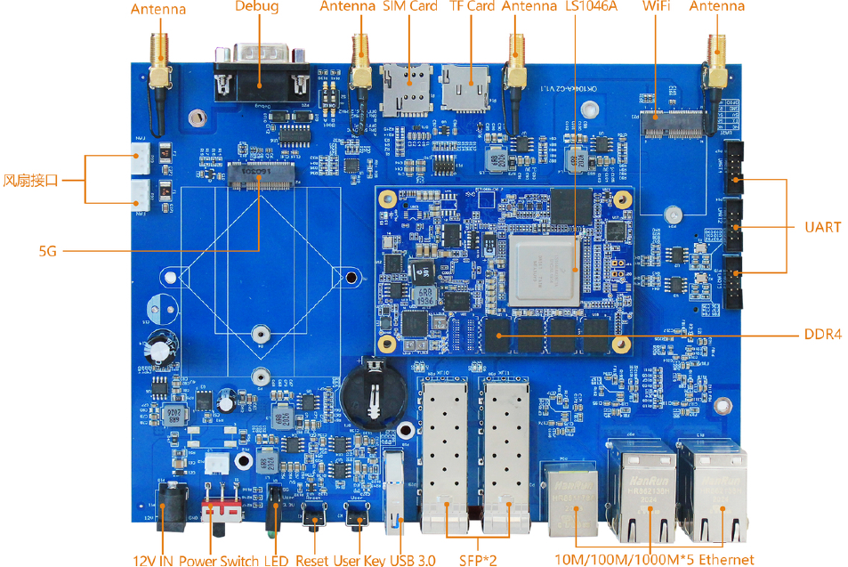
1.1 OK1046A-C2 Platform Description
Board |
OK1046A-C2 |
|---|---|
Kernel/User space |
Linux 4.14.47 64bit / 64bit user space |
Core |
4xARMv8-a72@ 1800MHz |
Operations frequency |
Core/Bus/DDR: 1800MHz/700MHz/2100MT/s |
Memory |
Single DDR controller with 2GB or 4GB DDR at 1600 MT/s |
U-Boot |
U-boot 2018.03 |
SEC |
Sec5.4 |
SerDes |
1133-5a59:xfi.m9+xfi.m10+s.m6,5,2+pcie.1(x1)+pcie.3(x1)+SATA |
FileSystem |
Ubuntu |
Compiler |
Ubuntu/Linaro7.3.0-16ubuntu3~18.04,glibc-2.27,binutils-2.30-0, gdb-8.1 |
1.2 Linux 4.14.47 System Software Resources Features
|Location of driver source code in the kernel| Device Name | | :———————————————- | :———————————————————– | :——————————- | | USB3.0 | drivers/usb/dwc3/core.c | | | RTC driver | drivers/rtc/rtc-rx8010.c | /dev/rtc0 | | QSPI | drivers/mtd/spi-nor/fsl-quadspi.c | /dev/mtd* | | ESDHC | drivers/mmc/host/sdhci-of-esdhc.c | /dev/mmcblk* | | TMU | drivers/thermal/qoriq_thermal.c | /sys/class/thermal/thermal_zone* | | SPI | drivers/spi/spi-fsl-dspi.c | /sys/class/spi_master | | I2C | drivers/i2c/busses/i2c-imx.c | /dev/i2c_* | | DUART | drivers/tty/serial/8250/8250_of.c | /dev/ttyS* | | LPUART | drivers/tty/serial/fsl_lpuart.c | /dev/ttySX | | FlexTimer | drivers/soc/fsl/layerscape/ftm_alarm.c | | | Watchdog | drivers/watchdog/imx2_wdt.c | /dev/watchdog | | SATA | drivers/ata/ahci_qoriq.c | /dev/sda* | | PCIE | drivers/pci/dwc/pci-layerscape.c | /sys/class/ pci_bus | | UCC_HDLC | drivers/net/wan/fsl_ucc_hdlc.c | | | IFC | drivers/memory/fsl_ifc.c | | | FMAN | drivers/net/ethernet/freescale/* | | | GPIO | drivers/gpio/gpio-mpc8xxx.c | /dev/ gpiochip* | | CRYPTO | drivers/crypto/caam/* | | | DPAA1 | drivers/staging/fsl_qbman/fsl_usdpaa.c | | | USB 4G | drivers/net/usb/ | /dev/ttyUSB* | | USB Quectel 5G | drivers/net/usb/Gobinet | /dev/ttyUSB2 |
1.3 Function Introduction of Dip Switch
Note: SerDes PLL1 on OK1046A-C2 software configuration provides clock for XFI, which must be 156.25 MHz. Please do not modify dial B.
OK1046A-C2 supports TF card and QSPI startup modes, and supports U disk flashing. DIP switch A is used to select the startup method and DIP switch B is used to select the reference clock of SerDes PLL1, which is not recommended to be modified by the customer. (QSPI startup as shown in the figure below)
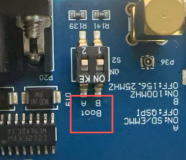
The default state of the dial switch A is OFF, indicating that uboot is started from the QSPI NOR Flash and can be programmed through the U disk. If the u-boot image in the QSPI flash is damaged and cannot boot properly, it is necessary to make a TF card to start u-boot, and use a USB flash drive for flashing. For detailed instructions, please refer to “Chapter 4. System Flashing”, for the specific operation steps.
Description of S2 DIP Switch A:
Mode DIP Switch |
QSPI Boot |
TF card Boot |
|---|---|---|
A |
OFF（Default state） |
ON |
Description of S2 DIP Switch B:
Mode DIP Switch |
SerDes PLL1 Clock 156.25MHz |
SerDes PLL1 clock 100MHz |
|---|---|---|
B |
OFF（Default state） |
ON |
1.4 Network Configuration and Interface Correspondence
In the network segment of the OK1046A-C2 software, the configuration supports network resources associated with the 1133_5a59. This setup includes 2 x SFP ports (fm1-mac9, fm1-mac10), 2 x RGMII ports (fm1-mac3, fm1-mac4), and 3 x SGMII ports (fm1-mac2, fm1-mac5, fm1-mac6), a total of seven network ports.
The following figure shows the correspondence between fm1-macN and RJ45 in Linux.
V1.x Carrier Board:

2. Fast Startup
2.1 Preparation Before Startup
The OK1046A-C2 development board has two system login methods, serial and network login.
Hardware preparation before system startup:
12V3A DC power cable
Debugging serial cable (serial login use)
The debug serial port on the development board is equipped with a DB9 male connector. Users can use either a null modem cable or a USB to RS232 serial cable to connect the development board to a PC.
This allows them to view the status information of the development board.
Network cable (for network login)
Check the DIP switch of boot mode.
Please check the dial switch on your development board to confirm that the desired startup mode has been set. For the startup mode setting, please refer to the chapter “Introduction to the Functions of the Dial Switch”.
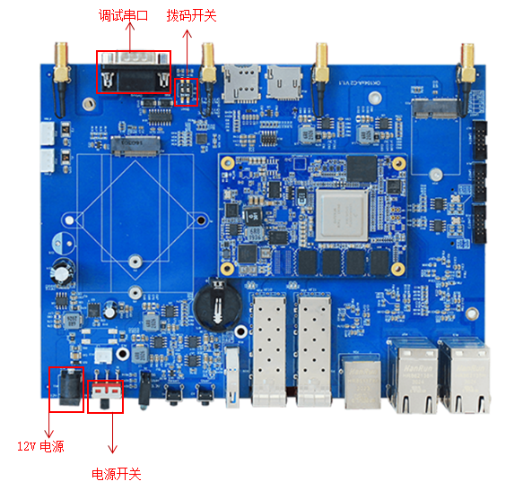
2.2 Port Login Methods
2.2.1 Serial Port Login
Note:
Serial port settings: Baud rate 115200, data bit 8, stop bit 1, no parity bit, no flow control;
Serial port terminal login uses root user login, account: root, no password;
Software: Windows PC requires Super Terminal; choose a familiar serial terminal software.
Here is an example using Putty to explain how to configure the terminal:
Step 1: Connect the development board and the PC using a serial cable, and verify the serial port number recognized by the computer through the “Device Manager”. The port number recognized by the computer should be considered as the accurate one;

Step 2: Open the putty and set the serial line according to the COM port of the computer used. The baud rate is 115 200. After setting, click “Open” to enter the serial port.
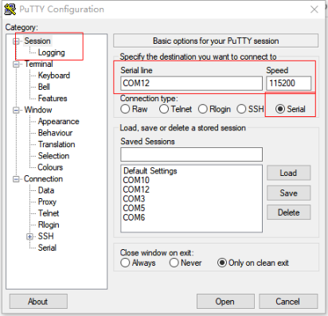
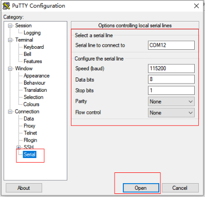
Step 3: Log in to the account named root, and press Enter directly without a password.
Ubuntu 18.04.1 LTS localhost ttyS0
localhost login: root
Last login: Wed Oct 24 07:14:28 UTC 2018 on ttyS0
Welcome to Ubuntu 18.04.1 LTS (GNU/Linux 4.14.47 aarch64)
* Documentation: https://help.ubuntu.com
* Management: https://landscape.canonical.com
* Support: https://ubuntu.com/advantage
root@localhost:~#
Step 4: View the kernel version information.
root@localhost:~# cat /proc/version //View the kernel information
Linux version 4.14.47 (zyh@1ffe9f7b637e) (gcc version 7.5.0 (Ubuntu/Linaro 7.5.0-3ubuntu1~18.04)) #1 SMP PREEMPT Thu Oct 14 09:17:03 CST 2021
It can be seen from the printed information that the Linux 4.14.47 related image is burned in the SoM..
2.2.2 Serial Port Login FAQ
If the computer does not have a serial port, we can use the USB to serial cable to connect with the development board. ( Using a USB to serial cable connection requires the matching driver).
It is better to use a good quality cable to avoid error codes.
2.3 Network Login Methods
Note:
The development board opens the fm1-mac3 network port (on P13) by default, and the default IP is 192.168.0.232;
The network port is shown as follows:

Please note that the prerequisite for network login is that the PC and the board are on the same LAN at the same time;
Default factory login account: forlinx, password: forlinx;
Test environment: Putty serial port tool.
2.3.1 SSH
Note:
The default IP of the development board NIC is 192.168.0.232;
User name: forlinx, Password: forlinx.
The OK1046A-C2 development board comes with SSH service support and is automatically activated during startup. Once the IP address is set up, you can use SSH to log in to the board for development and debugging. Additionally, you can use scp files to transfer. The default IP of the development board NIC is 192.168.0.232, and the IP of the test computer is 192.168.0.12 as an example.
Access the development board via putty SSH login while ensuring that the board can ping with the computer:
On the windows system, click the “windows + R key combination” to open the command running box, and enter “cmd” in the pop-up text box to enter the command line terminal under windows.
Enter the following command at the terminal to test the network status of the development board and the computer through the ping command:
C:\Users\Administrator>ping 192.168.0.232

As shown in the figure above, the connection between the development board and the computer network is normal;
The development board is accessed by the Windows host through putty as follows:

Click “Open” to display the following dialog box, and click “Yes” to enter the login page.

After opening the serial port, enter the account: forlinx, password: forlinx
login as: forlinx
root@192.168.0.232's password: //Enter forlinx, no display, press Enter to enter the system
Welcome to Ubuntu 18.04.1 LTS (GNU/Linux 4.14.47 aarch64)
* Documentation: https://help.ubuntu.com
* Management: https://landscape.canonical.com
* Support: https://ubuntu.com/advantage
The programs included with the Ubuntu system are free software;
the exact distribution terms for each program are described in the
individual files in /usr/share/doc/*/copyright.
Ubuntu comes with ABSOLUTELY NO WARRANTY, to the extent permitted by
applicable law.
The programs included with the Ubuntu system are free software;
the exact distribution terms for each program are described in the
individual files in /usr/share/doc/*/copyright.
Ubuntu comes with ABSOLUTELY NO WARRANTY, to the extent permitted by
applicable law.
Last login: Sun Jan 28 16:11:55 2018
forlinx@localhost:~$
The SSH login is successful as shown above.
2.3.2 Telnet
Note:
The default IP of the development board NIC is 192.168.0.232;
User name: forlinx, Password: forlinx.
The OK1046A-C2 development board supports the telnet service, which is automatically enabled by default. After the IP address is set, it can be used as a telnet server. The default IP of the development board NIC is 192.168.0.232, and the IP of the test computer is 192.168.0.12 as an example.
Log in to access the board via Putty Telnet while ensuring that the board can ping the computer. Putty serial port settings are as follows:
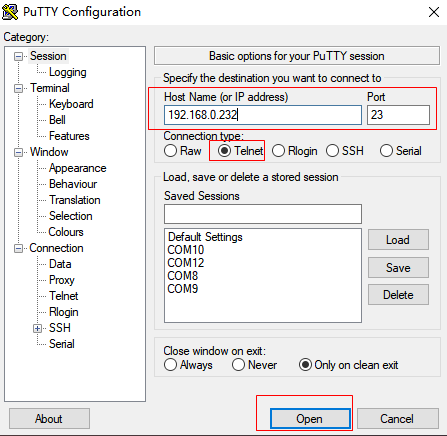
Click “Open”, open the serial port and enter the account number: forlinx, password: forlinx
Ubuntu 18.04.1 LTS
localhost login: forlinx
Password: //Enter password：forlinx, no display，press Enter to enter the system
Last login: Sun Jan 28 15:58:34 UTC 2018 on ttyS0
Welcome to Ubuntu 18.04.1 LTS (GNU/Linux 4.14.47 aarch64)
* Documentation: https://help.ubuntu.com
* Management: https://landscape.canonical.com
* Support: https://ubuntu.com/advantage
The programs included with the Ubuntu system are free software;
the exact distribution terms for each program are described in the
individual files in /usr/share/doc/*/copyright.
Ubuntu comes with ABSOLUTELY NO WARRANTY, to the extent permitted by
applicable law.
The programs included with the Ubuntu system are free software;
the exact distribution terms for each program are described in the
individual files in /usr/share/doc/*/copyright.
Ubuntu comes with ABSOLUTELY NO WARRANTY, to the extent permitted by
applicable law.
forlinx@localhost:~$
The Telnet login is successful as shown above.
2.4 System Partition
The OK1046A-C2 platform comes with a 16M QSPI Flash and an 8GB EMMC built-in. It supports QSPI boot as well as SD/EMMC boot. To get started, a 16M Firmware image must be flashed into the QSPI Flash or SD/EMMC. The offsets for each part of the Firmware in Flash are listed in the table below for reference.
File |
Maximum Size |
QSPI flash offset |
SD/eMMC start block（512byte） |
|---|---|---|---|
RCW+PBI |
1 MB |
0x00000000 |
0x00008 |
Boot firmware |
2 MB |
0x00100000 |
0x00800 |
Boot firmware environment |
1 MB |
0x00300000 |
0x01800 |
PPA firmware |
2 MB |
0x00400000 |
0x02000 |
Secure boot headers |
3 MB |
0x00600000 |
0x03000 |
DPAA1 FMan microcode |
256 KB |
0x00900000 |
0x04800 |
QE/microQE firmware |
256 KB |
0x00940000 |
0x04A00 |
Ethernet PHY firmware |
256 KB |
0x00980000 |
0x04C00 |
Scripts |
256 KB |
0x009C0000 |
0x04E00 |
DPAA2 MC / PFE firmware |
3 MB |
0x00A00000 |
0x05000 |
DPAA2 DPL |
1 MB |
0x00D00000 |
0x06800 |
DPAA2 DPC |
1 MB |
0x00E00000 |
0x07000 |
The partition information of the file system in EMMC is shown in the following table:
Partition |
Name |
Document system type |
Offset (512 byte) |
Size |
|
|---|---|---|---|---|---|
FAT32 |
2048 |
20M |
|||
/dev/mmcblk0p2 |
Kernel (boot the kernel) |
FAT32 |
43008 |
100M |
|
/dev/mmcblk0p3 |
File system partition |
EXT4 |
247808 |
≈7G |
Use the df command to view disk usage on your system. df -h displays file system disk space usage in a human-readable format. The following shows the factory default disk usage for reference only, please refer to the actual parameters.
root@localhost:~# df -h
Filesystem Size Used Avail Use% Mounted on
/dev/root 6.8G 2.7G 4.2G 39% /
devtmpfs 928M 0 928M 0% /dev
tmpfs 937M 4.0K 937M 1% /dev/shm
tmpfs 937M 568K 936M 1% /run
tmpfs 5.0M 0 5.0M 0% /run/lock
tmpfs 937M 0 937M 0% /sys/fs/cgroup
/dev/mmcblk0p2 99M 21M 78M 22% /run/media/mmcblk0p2
tmpfs 188M 0 188M 0% /run/user/1000
Use the free -h command to view the memory usage in an easy-to-read manner. The following shows the memory usage without any peripherals connected, which is for reference only, please refer to the actual parameters.
root@localhost:~# free -h
total used free shared buff/cache available
Mem: 1.8G 107M 1.5G 7.4M 224M 1.6G
Swap: 0B 0B 0B
2.5 System Shutdown
Note: If the user-designed product using the SoM experiences an unexpected shutdown due to power loss during operation, power-down protection measures can be included in the design to prevent this issue.
In general, the power can be turned off directly, if there is data storage, function use and other operations, do not arbitrarily disconnect the power during the operation, in order to prevent irreversible damage to the file, you can only re-burn the firmware. To ensure that data is not completely written, enter the sync command to complete data synchronization before turning off the power.
3. OK1046A-C2 Platform Function Test
Note: The SoM of this product supports functions not limited to those mentioned in the manual. Forlinx only tests and verifies the functions listed in the manual. Functions not mentioned in the manual are not guaranteed, and users can test and verify them independently.
This section describes how to use the external expansion interface of the development board.
3.1 Hardware Resource Test
Command line test program source code path: OK10xx-linux-fs/flexbuild/packages/apps/forlinx
Testing program path in the development board’s file system: /usr/bin.
The test program used in this section is integrated into the demo provided by Forlinx, so there is no need for file source explanation. We will proceed directly with the command operations.
3.1.1 A72 FM Test
Note: This process is illustrated using “cpu0” as an example, but in reality, the process will simultaneously apply to “cpu1”, “cpu2”, and “cpu3” as well.
The CPU of the OK1046A-C2 SoM supports dynamic frequency scaling. After booting up, the CPU frequency scaling policy is set to “ondemand”. The ondemand mode quickly and dynamically adjusts the CPU frequency on demand. As soon as there is a task with CPU calculation, it will dynamically adjust the frequency according to the size of the calculation, and return to the lowest frequency immediately after execution. Sometimes the frequency of CPU can not meet the needs of users, and the mode of CPU needs to be adjusted. The following is an example of setting the CPU to performance mode:
List the current management modes and view the current frequency of the CPU:
root@localhost:~# cat /sys/devices/system/cpu/cpu0/cpufreq/scaling_governor
ondemand <br /> //The current management mode is the default dynamic FM mode of the system
root@localhost:~# cat /sys/devices/system/cpu/cpu0/cpufreq/scaling_cur_freq
800000 <br /> //The current CPU frequency is 0.8GHz
List all management modes
root@localhost:~# cat /sys/devices/system/cpu/cpu0/cpufreq/scaling_available_governors<br />
conservative ondemand userspace powersave performance
List the frequencies supported by the CPU.
root@localhost:~# cat /sys/devices/system/cpu/cpu0/cpufreq/scaling_available_frequencies<br />
1800000 1600000 900000 800000 //Display the four frequencies supported<br />by the current CPU
//Change the CPU management mode and set it to high performance mode
root@localhost:~# echo performance >
/sys/devices/system/cpu/cpu0/cpufreq/scaling_governor
List the current management mode of the CPU and view the current CPU frequency
root@localhost:~# echo performance > /sys/devices/system/cpu/cpu0/cpufreq/scaling_governor performance<br />
//The current management mode is performance mode
root@localhost:~# cat /sys/devices/system/cpu/cpu0/cpufreq/scaling_cur_freq
1800000<br /> //The current CPU frequency is 1.8GHz
If you want to use other policies by default, take high-performance mode as an example, you can make the following settings.
root@localhost:~# systemctl disable ondemand.service //Turn off the current mode service
root@localhost:~# apt-get install cpufrequtils //Download the tool frequency conversion package
root@localhost:~# vi /etc/default/cpufrequtils
GOVERNOR="performance" //Add the content
Restart the development board and check whether the current mode is modified successfully.
root@localhost:~# cat /sys/devices/system/cpu/cpu0/cpufreq/scaling_governor<br />
performance
3.1.2 A72 CoreMark Test
The most well-known and common Benchmarks in the field of embedded processors are Dhrystone and CoreMark. CoreMark is a comprehensive benchmark for measuring the performance of central processing units (CPU) used in embedded systems. It was developed in 2009 by eembc’s shay gal-on to become an industry standard, replacing the outdated dehrystone benchmark.
The OK1046A-C2 platform has the CoreMark test program ported by default, and you can use the following commands to test it:
Set the CPU to high performance mode
root@localhost:~# echo performance ><br /> /sys/devices/system/cpu/cpu0/cpufreq/scaling_governor
CoreMark test
root@localhost:~# coremark.exe //Run the CoreMark test
//The operation result printing information is as follows:
2K performance run parameters for coremark.
CoreMark Size : 666
Total ticks : 17460
Total time (secs): 17.460000
Iterations/Sec : 11454.753723
Iterations : 200000
Compiler version : GCC7.3.0
Compiler flags : -O3 -funroll-all-loops --param max-inline-insns-auto=550 -DPERFORMANCE_RUN=1 -lrt
Memory location : Please put data memory location here
(e.g. code in flash, data on heap etc)
seedcrc : 0xe9f5
[0]crclist : 0xe714
[0]crcmatrix : 0x1fd7
[0]crcstate : 0x8e3a
[0]crcfinal : 0x4983
Correct operation validated. See readme.txt for run and reporting rules.
CoreMark 1.0 : 11454.753723 / GCC7.3.0 -O3 -funroll-all-loops --param max-inline-insns-auto=550 -DPERFORMANCE_RUN=1 -lrt / Heap
CoreMark test result:
Core/Bus/DDR |
Dhrystone Process # |
DMIPS/MHz |
DMIPS |
|---|---|---|---|
OK1046A-C2 |
1 |
5.27 |
9843.9 |
3.1.3 A72 Dhrystone Test
Dhrystone is a comprehensive benchmark program designed by Reinhold P. Weicker in 1984, used to test CPU (integer) computing performance. Dhrystone does not include floating-point operations. Its output result is the number of times the Dhrystone benchmark is executed per second, indicating the number of iterations of the main loop per second.
The Dhrystone testing program has been successfully ported to the OK1046A-C2 platform. You can use the following command to run the test.
Set the CPU to high performance mode
root@localhost:~# echo performance > /sys/devices/system/cpu/cpu0/cpufreq/scaling_governor
Dhrystone test
root@localhost:~# echo 50000000 | dhrystone
//The following is the printed information from the partial running results of the test program section:
Enum_Loc: 1
should be: 1
Str_1_Loc: DHRYSTONE PROGRAM, 1'ST STRING
should be: DHRYSTONE PROGRAM, 1'ST STRING
Str_2_Loc: DHRYSTONE PROGRAM, 2'ND STRING
should be: DHRYSTONE PROGRAM, 2'ND STRING
Register option selected? YES
Microseconds for one run through Dhrystone: 0.1
Dhrystones per Second: 16663317.3
VAX MIPS rating = 9483.960
Dhrystone test result:
Core/Bus/DDR |
Dhrystone Process # |
DMIPS/MHz |
DMIPS |
|---|---|---|---|
OK1046A-C2 |
1 |
5.27 |
9843.9 |
3.1.4 TMU Test
OK1046A-C2 platform SOC is internally provided with five temperature sensors, and sensor3 is used as the temperature sensor of Thermal in the software.
Temperature sensor ID |
Placement |
|---|---|
0 |
Near DDR controller |
1 |
Near SerDes |
2 |
Near Frame manager |
3 |
Near ARM A53 core |
4 |
SEC |
Read the temperature of sensor 3:
root@localhost:~# cat /sys/class/thermal/thermal_zone0/temp //View the current temperature of sensor3
41000 //The measured value of the current temperature sensor is 41 degrees Celsius.
3.1.5 Memory Test
Lmbench is an easy-to-use, portable, ANSI/C-compliant micro-assessment tool for UNIX/POSIX. In general, it measures two key characteristics: response time and bandwidth. We used LmBench to test the OK1046A-C2 platform cache as well as DDR bandwidth.
The OK1046A-C2 platform has been ported with Lmbench and you can test it with the following commands:
Set the CPU to high performance mode
root@localhost:~# echo performance > /sys/devices/system/cpu/cpu0/cpufreq/scaling_governor
Lmbench test, here testing V1.X SoM for example
root@localhost:~# memory_bandwidth.sh //Execute script test Program
//The printed information from the running results section is as follows:
L1 cache bandwidth bcopy test with # process
0.008192 14001.93
0.008192 14089.03
0.008192 14085.15
0.008192 14091.68
0.008192 13988.12
L2 cache bandwidth bcopy test
0.131072 10076.98
0.131072 10075.15
0.131072 10075.15
0.131072 10135.54
0.131072 10073.19
Main mem bandwidth bcopy test
52.43 2824.52
52.43 2825.13
52.43 2824.83
52.43 2825.28
52.43 2824.83
Lmbench test results of V1.X SoM:
Cache/Memory |
rd |
wr |
rdwr |
cp |
frd |
fwr |
fcp |
bzero |
bcopy |
|---|---|---|---|---|---|---|---|---|---|
L1(MB/s) |
28556 |
20928 |
19188 |
19760 |
7180 |
7178 |
6121 |
17892 |
14090 |
L2(MB/s) |
15767 |
17624 |
11256 |
9119 |
6780 |
7142 |
6522 |
11999 |
10075 |
DDR(MB/s) |
6440 |
2349 |
2387 |
1624 |
6431 |
6478 |
2726 |
6562 |
2824 |
Lmbench test results of V2.X SoM:
Cache/Memory |
rd |
wr |
rdwr |
cp |
frd |
fwr |
fcp |
bzero |
bcopy |
|---|---|---|---|---|---|---|---|---|---|
L1(MB/s) |
28552 |
20931 |
19191 |
19392 |
7181 |
7176 |
5666 |
17345 |
14051 |
L2(MB/s) |
15767 |
17671 |
11255 |
9059 |
6757 |
7142 |
6515 |
13693 |
10067 |
DDR(MB/s) |
9858 |
3649 |
3771 |
2740 |
6432 |
7191 |
5307 |
11026 |
5306 |
3.1.6 QSPI Read/Write Test
The OK1046A-C2 platform has a 16MB QSPI Flash on board. By default, the boot Firmware is stored in the QSPI Flash. This section is only for testing the speed of the QSPI interface, and it is not recommended that you store data in the QSPI Flash (as a result, you will not be able to start using QSPI).
Test method: Use the dd command to test the interface speed
Read:
root@localhost:~# time dd if=/dev/mtdblock0 of=/dev/null bs=1024K count=16
16+0 records in
16+0 records out
16777216 bytes (17 MB, 16 MiB) copied, 1.40143 s, 12.0 MB/s
real 0m1.409s
user 0m0.000s
sys 0m0.022s
Test result:
Mode |
File System |
File size |
Time consuming |
Speed |
|---|---|---|---|---|
Read |
RAW |
16MB |
1.4s |
12MB/s |
time Command: Used to measure information such as the time and system resources consumed by the execution of a specific instruction.
dd Command: Reads data from standard input or a file, converts it according to a specified format, and outputs to a file, device, or standard output.
Some parameter descriptions of the dd command:
Parameter |
Description |
|---|---|
if |
Enter the file name, that is, specify the source films |
of |
Output file name, which specifies the destination file |
bs |
Also, set the read/output block size in bytes. |
count |
: only blocks are copied, and the block size is equal to the number of bytes specified by ibs. |
3.1.7 EMMC Read&Write Test
Note: The test results with the file system are slightly different in different environments. It is not recommended to test the device node of dd eMMC directly, because it will result in the file system data being corrupted and the file system needs to be re-flashed.
The OK1046A-C2 platform has an 8GB eMMC onboard and runs in HS200 high-speed mode.
Test method: Use the dd command to test the interface speed
Write test:
root@localhost:~# time dd if=/dev/zero of=/test.bin bs=1M count=512 conv=fsync
The printing information is as follows：
512+0 records in
512+0 records out
536870912 bytes (537 MB, 512 MiB) copied, 25.8264 s, 20.8 MB/s
real 0m25.833s
user 0m0.000s
sys 0m1.647s
Read test:
root@localhost:~# time dd if=/test.bin of=/dev/null bs=1M
The printing information is as follows：
512+0 records in
512+0 records out
536870912 bytes (537 MB, 512 MiB) copied, 7.36896s,72.9MB/s
real 0m7.376s
user 0m0.001s
sys 0m0.600s
Test result:
Mode |
File System |
File size |
Time consuming |
Speed |
|---|---|---|---|---|
Write |
EXT4 |
512M |
25.8s |
20.8MB/s |
Read |
EXT4 |
512M |
7.37s |
72.9MB/s |
3.1.8 USB3.0 Test
Note:
The test results will be affected by the actual speed of the USB 3.0 device;
Support hot-plugging of USB flash drive devices;
If NTFS isn’t supported and you’re unsure of the USB drive’s format, it’s best to format it to FAT32 before using it;
The mount directory of the USB flash disk is/run/media.
OK1046A-C2 platform has two USB3.0 interfaces on board, which can be connected to high-speed devices containing USB3.0 such as mobile hard disks. Of course, USB 1.0 USB2.0 devices can also be used normally. This section uses a solid-state hard disk with an mSATA to USB3.0 interface for testing.
Test method：
Insert the USB 3.0 SSD to view the default mount directory.
root@localhost:~# mount | grep sda
/dev/sda1 on /run/media/sda1 type vfat (rw,relatime,gid=6,fmask=0007.dmask=0007,
allow_utime=0020,codepage=437.iocharset=iso8859-1,shortname=mixed,errors=remount-ro)
/dev/sda2 on /run/media/sda2 type ext4(rw,relatiome,date=ordered)
root@localhost:~#
If your hard disk is not partitioned, use the fdisk command to partition it. Here read and write files from the ext4 partition to test the USB3.0 interface.
Read and write test:
Write test:
root@localhost:~# time dd if=/dev/zero of=/run/media/sda2/test.bin bs=1024K count=4096 \conv=fsync
4096+0 records in
4096+0 records out
4294967296 bytes (4.3GB, 4.0GB) copied, 23.8942s, 180MB/s
real 0m23.941s
user 0m0.019s
sys 0m3.028s
Read test:
root@localhost:~# time dd if=/run/media/sda2/test.bin of=/dev/null bs=1024K
4096+0 records in
4096+0 records out
4294967296 bytes (4.3GB, 4.0GB) copied,11.532 s, 372MB/s
real 0m11.539s
user 0m0.012s
sys 0m5.022s
Test result:
Mode |
File System |
File size |
Time consuming |
Speed |
|---|---|---|---|---|
Write |
EXT4 |
982MB |
23.894S |
180MB/S |
Read |
EXT4 |
982MB |
11.53s |
372MB/s |
3.1.9 mSATA Interface Test
The OK1046A-C2 platform supports one mSATA interface SATA protocol SSD. Before powering up the system, insert the mSATA SSD (KingBank SSD is used here as an example) into the mSATA HDD card slot on the carrier board, with the interface shown below:
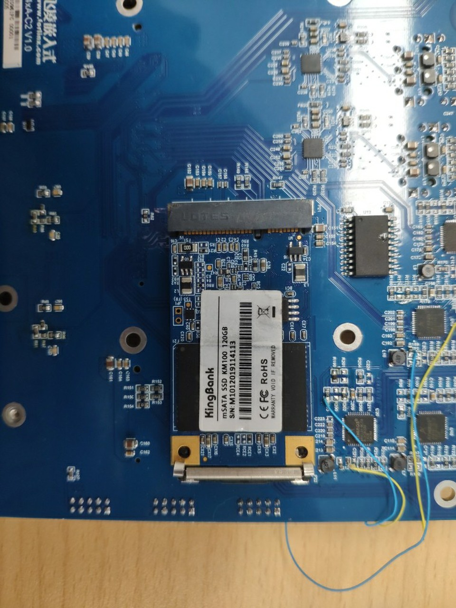
After powering on and starting Linux, you can see that the corresponding device is enumerated successfully through lspci.
root@localhost:~# lsblk //Display all block devices on a Linux system
NAME MAJ:MIN RM SIZE RO TYPE MOUNTPOINT
sda 8:0 0 111.8G 0 disk
└─sda1 8:1 0 111.8G 0 part
mtdblock0 31:0 0 16M 0 disk
mmcblk0 179:0 0 7.3G 0 disk
├─mmcblk0p1 179:1 0 20M 0 part
├─mmcblk0p2 179:2 0 100M 0 part /run/media/mmcblk0p2
└─mmcblk0p3 179:3 0 7.2G 0 part /
mmcblk0boot0 179:32 0 4M 1 disk
mmcblk0boot1 179:64 0 4M 1 disk
mmcblk0rpmb 179:96 0 4M 0 disk
View the default mount location of the hard disk.
root@localhost:~# df -Th //Display the current file system disk usage statistics on a Linux system
Filesystem Type Size Used Avail Use% Mounted on
/dev/root ext4 6.8G 2.5G 4.3G 37% /
devtmpfs devtmpfs 928M 0 928M 0% /dev
tmpfs tmpfs 937M 4.0K 937M 1% /dev/shm
tmpfs tmpfs 937M 2.3M 935M 1% /run
tmpfs tmpfs 5.0M 0 5.0M 0% /run/lock
tmpfs tmpfs 937M 0 937M 0% /sys/fs/cgroup
/dev/mmcblk0p2 vfat 99M 21M 78M 22% /run/media/mmcblk0p2
/dev/sda1 114854492 61464 108915656 1% /run/media/sda1
tmpfs tmpfs 188M 0 188M 0% /run/user/0
You can see that the mSATA SSD is mounted in/run/media/sda1.
Read and write test:
Write test:
root@localhost:~# dd if=/dev/zero of=/run/media/sda1/test.img bs=1024K count=4096 \ conv=fsync //Use the dd command to test the speed of the interface
4096+0 records in
4096+0 records out
4294967296 bytes (4.3 GB, 4.0 GiB) copied, 9.91619 s, 433 MB/s
Read test:
root@localhost:~# dd if=/run/media/sda1/test.img of=/dev/null bs=1024K count=4096
4096+0 records in
4096+0 records out
4294967296 bytes (4.3 GB, 4.0 GiB) copied, 9.77738 s, 439 MB/s
Test result:
Mode |
File System |
File size |
Time consuming |
Speed |
|---|---|---|---|---|
Write |
EXT4 |
982MB |
23.894S |
180MB/S |
Read |
EXT4 |
982MB |
11.53s |
372MB/s |
3.1.10 m. 2 Type 2230 Interface Test
The OK1046A-C2 platform supports INTEL 3168NGW, INTEL 9260NGW, and RTL8822CE dual-band WiFi modules by default. Before the system is powered on, insert the module into the m.2 Type 2230 card slot on the backplane. Here, the INTEL 3168NGW module is taken as an example, as shown in the following figure:
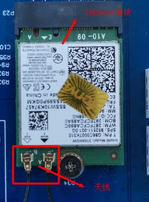
After the system is powered on and started, you can see that the corresponding device is enumerated successfully through lspci.
INTEL 3168NGWmodule:
root@localhost:~# lspci //Display all PCI bus devices
0000:00:00.0 PCI bridge:Freescale Semiconductor Inc Device 8082 (rev 11)
0001:00:00.0 PCI bridge:Freescale Semiconductor Inc Device 8082 (rev 11)
0001:01:00.0 Network controller :Intel Corporation Device 24fb (rev 10)
The network node of the dual-band WiFi module is wlP1p1s0
Please refer to the WIFI test section for the test method of the dual-band WiFi module.
3.1.11 Network Test
In the network segment of the OK1046A-C2 software, the configuration supports network resources associated with the 1133_5a59. This setup includes 2 x SFP ports (fm1-mac9, fm1-mac10), 2 x RGMII ports (fm1-mac3, fm1-mac4), and 3 x SGMII ports (fm1-mac2, fm1-mac5, fm1-mac6), a total of seven network ports.
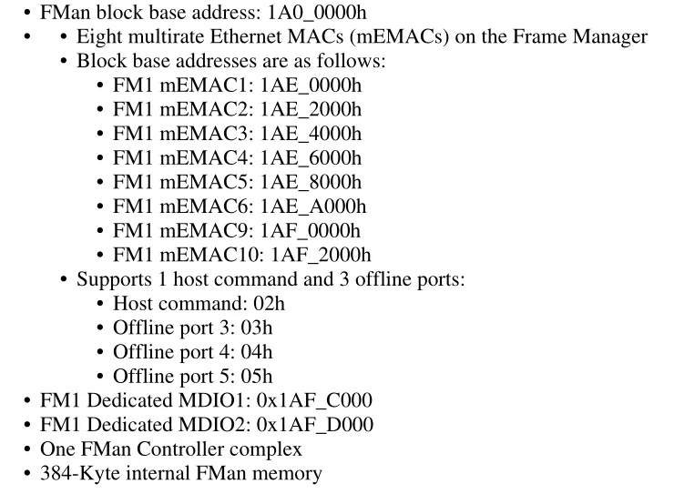
By default, fm1-mac3 (on P13) is set to static IP: 192.168.0.232.
The following figure shows the correspondence between fm1-macN and RJ45 in Linux.
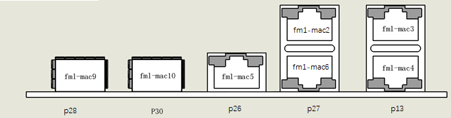
2 x RGMII interfaces, 3 x SGMII interfaces, 2 x SFP interfaces.
Before testing, first configure the ls1046’s frame manager with the fmc for better network performance.
Note: The configuration has been completed automatically by default, and the user does not need to configure again.
1133_5a59：
root@localhost:~# fmc -c /etc/fmc/config/private/ls1046ardb/FORLINX/config_1133.xml \
-p /etc/fmc/config/private/ls1046ardb/FORLINX/policy_ipv4.xml -a
3.1.11.1 SFP + Network Test (P30)
In this section, the SFP + electrical interface module is used to test the SFP + interface (both optical and electrical interface modules can be tested according to your own needs). The opposite end of the test environment is a Linux host installed with a 10 Gigabit network card (the host eth1 in this test is a 10 Gigabit network card, and its IP address is 192.168.2.181).
To test fm1-mac9, follow these steps:
1. Insert the SFP+ electrical interface module into the P28 interface before powering up;
2. Start the development board and connect the network cable to the Linux host;
3. Observe the D3 and D4 indicators on the OK1046A-C2 carrier board.
D4 indicates that the CPU signal output is normal.
D3 indicates that the SFP+ electrical interface module is properly connected to the Linux host.
To test fm1-mac10, follow these steps:
1. Insert the SFP+ electrical interface module into the P30 interface before powering up;
2. Start the development board and connect the network cable to the Linux host;
3. Observe the D5 and D6 indicators on the OK1046A-C2 carrier board;
D6 indicates that the CPU signal output is normal.
D5 indicates that the SFP+ electrical interface module is properly connected to the Linux host.
Take testing fm1-mac10 as an example:
The test environment parameters are as follows (here is an example, and the IP address is subject to the actual situation):
Host |
IP address |
|---|---|
Linux Host |
192.168.2.181 |
OK1046A-C2 |
192.168.2.182 |
Use iperf for streaming test, and input on the Linux host in the same LAN:
forlinx@ubuntu~$ ifconfig eth1 192.168.2.181 //Set the IP address of network port eth1 to 192.168.2.181
forlinx@ubuntu~$ iperf3 -s //Start the iperf3 test program as the server
Enter the following command on the OK1046A-C2 terminal:
root@localhost:~# ifconfig fm1-mac10 up //Open the network port fm1-mac9
root@localhost:~# ifconfig fm1-mac10 192.168.2.182
//Set the network port fm1-mac9 ip is 192.168.2.182
root@localhost:~# echo performance > /sys/devices/system/cpu/cpu0/cpufreq/scaling_governor
//Change the CPU management mode and set it to high performance mode
root@localhost:~# iperf3 -c 192.168.2.181 -i 5 -t 60
Connecting to host 192.168.1.181, port 5201
[ 4] local 192.168.1.106 port 39656 connected to 192.168.1.181 port 5201
[ ID] Interval Transfer Bandwidth Retr Cwnd
[ 4] 0.00-5.01 sec 4.18 GBytes 7.18 Gbits/sec 0 332 KBytes
[ 4] 5.01-10.01 sec 4.18 GBytes 7.20 Gbits/sec 0 414 KBytes
[ 4] 10.01-15.00 sec 4.23 GBytes 7.26 Gbits/sec 0 414 KBytes
[ 4] 15.00-20.00 sec 4.23 GBytes 7.26 G bits/sec 0 414 KBytes
…Omit
As shown above, the streaming test is successful.
3.1.11.2 RGMII Interface Network Test (using P13 lower network port as an example)
OK1046A-C2 has two gigabit RGMII network ports. Take fm1-mac4 (under P13) network port streaming test network speed as an example.
The test environment parameters are as follows (here is an example, and the IP address is subject to the actual situation):
Host |
IP address |
|---|---|
Linux Host |
192.168.1.181 |
OK1046A-C2 |
192.168.1.106 |
Use iperf3 as a streaming tool to test the network speed. On the Linux host in the same LAN, enter:
forlinx@ubuntu~$ ifconfig eth0 192.168.1.181 //Set the IP of network port eth0 to 192.168.1.181
forlinx@ubuntu~$ iperf3 -s //Start the iperf3 test program as the server
Insert the network cable into the fm1-mac4 (under P13) port, and enter the following command on the terminal to test:
root@localhost:~# ifconfig fm1-mac9 down //Turn off the network portfm1-mac9
root@localhost:~# ifconfig fm1-mac4 up //Turn on the network fm1-mac4
root@localhost:~# ifconfig fm1-mac4 192.168.1.106
//Set the IP of network ports fm1-Mac4 to 192.168.1.106
root@localhost:~# echo performance > /sys/devices/system/cpu/cpu0/cpufreq/scaling_governor
//Change the CPU management mode and set it to high performance mode
root@localhost:~# iperf3 -c 192.168.1.181 -i 5 -t 60 //Set the client, report output interval, transmission time,
Connecting to host 192.168.1.181, port 5201
[ 4] local 192.168.1.106 port 39656 connected to 192.168.1.181 port 5201
[ ID] Interval Transfer Bandwidth Retr Cwnd
[ 4] 0.00-5.01 sec 538 MBytes 901 Mbits/sec 0 1.59 MBytes
[ 4] 5.01-10.01 sec 551 MBytes 925 Mbits/sec 0 1.80 MBytes
[ 4] 10.01-15.00 sec 549 MBytes 921 Mbits/sec 0 1.80 MBytes
[ 4] 15.00-20.00 sec 552 MBytes 927 Mbits/sec 0 1.80 MBytes
[ 4] 20.00-25.00 sec 561 MBytes 941 Mbits/sec 0 1.80 MBytes
[ 4] 25.00-30.00 sec 555 MBytes 932 Mbits/sec 0 2.71 MBytes
[…]
- - - - - - - - - - - - - - - - - - - - - - - - -
[ ID] Interval Transfer Bandwidth Retr
[ 4] 0.00-60.01 sec 6.51 GBytes 932 Mbits/sec 0 sender
[ 4] 0.00-60.01 sec 6.51 GBytes 932 Mbits/sec receiver
iperf Done.
As shown above the streaming test is successful.
3.1.11.3 SGMII Interface Network Test(taking P27 lower network port as an example)
OK1046A-C2 has four gigabit QSGMII network ports. Take fm1-mac6 (under P27) network port streaming test network speed as an example.
The test environment parameters are as follows (here is an example, and the IP address is subject to the actual situation):
Host |
IP |
|---|---|
Linux Host |
192.168.1.181 |
OK1046A-C2 |
192.168.1.106 |
On a Linux host in the same LAN, enter:
forlinx@ubuntu~$ ifconfig eth0 192.168.1.181 //Set the IP of network port eth0 to 192.168.1.181
forlinx@ubuntu~$ iperf3 -s //Start the iperf3 test program as the server
Plug the network cable into the fm1-mac6 interface (under P27) and test it by entering the following command in the terminal:
root@localhost:~# ifconfig fm1-mac4 down // Turn off the fm1-mac4 network interface
root@localhost:~# ifconfig fm1-mac6 192.168.1.106 // Set the IP address of the fm1-mac6 network interface
root@localhost:~# echo performance > /sys/devices/system/cpu/cpu0/cpufreq/scaling_governor
// Change the CPU management mode and set it to high-performance mode
root@localhost:~# iperf3 -c 192.168.1.181 -i 5 -t 60 // Set the client, report output interval, and transmission time
Connecting to host 192.168.1.181, port 5201
[ 4] local 192.168.1.106 port 39656 connected to 192.168.1.181 port 5201
[ ID] Interval Transfer Bandwidth Retr Cwnd
[ 4] 0.00-5.01 sec 538 MBytes 901 Mbits/sec 0 1.59 MBytes
[ 4] 5.01-10.01 sec 551 MBytes 925 Mbits/sec 0 1.80 MBytes
[ 4] 10.01-15.00 sec 549 MBytes 921 Mbits/sec 0 1.80 MBytes
[ 4] 15.00-20.00 sec 552 MBytes 927 Mbits/sec 0 1.80 MBytes
[ 4] 20.00-25.00 sec 561 MBytes 941 Mbits/sec 0 1.80 MBytes
[ 4] 25.00-30.00 sec 555 MBytes 932 Mbits/sec 0 2.71 MBytes
[…]
- - - - - - - - - - - - - - - - - - - - - - - - -
[ ID] Interval Transfer Bandwidth Retr
[ 4] 0.00-60.01 sec 565 MBytes 932 Mbits/sec 0 sender
[ 4] 0.00-60.01 sec 561 MBytes 932 Mbits/sec receiver
iperf Done.
As shown above the streaming test is successful.
3.1.12 FTP Test
Note:
Account no.：forlinx, password：forlinx;
Default network card fm1-mac3(P13 up) IP：192.168.0.232;
If you encounter a 553 Could not create file error during the upload process, consider the user permissions issue. For example, if you are uploading a file to the /home/ forlinx path, use the chmod 777 /home/forlinx command to assign the highest permission.
OK1046A-C2 development board supports FTP service and automatically starts when powered on. Once you’ve set the IP address, it can be used as an FTP server.
The following describes how to utilize the FTP tool for file transfer.
Path: OK10XX-C (LINUX) user profile\tool\FileZilla*
Install the FileZilla tool on Windows and set it up as shown in the figure below.

After successful login, you can upload and download.
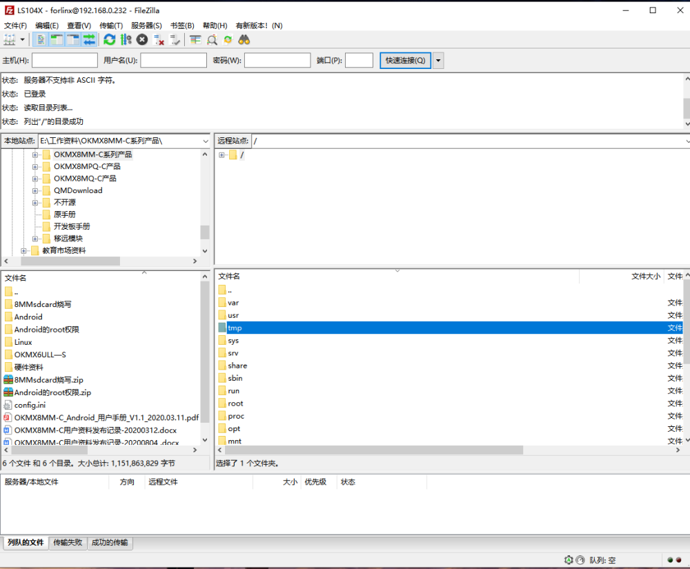
To upload the test, select the file to be uploaded in the local site and right click “Upload”.


To download the test, select the file to be downloaded in the remote site, and right click “Download”:
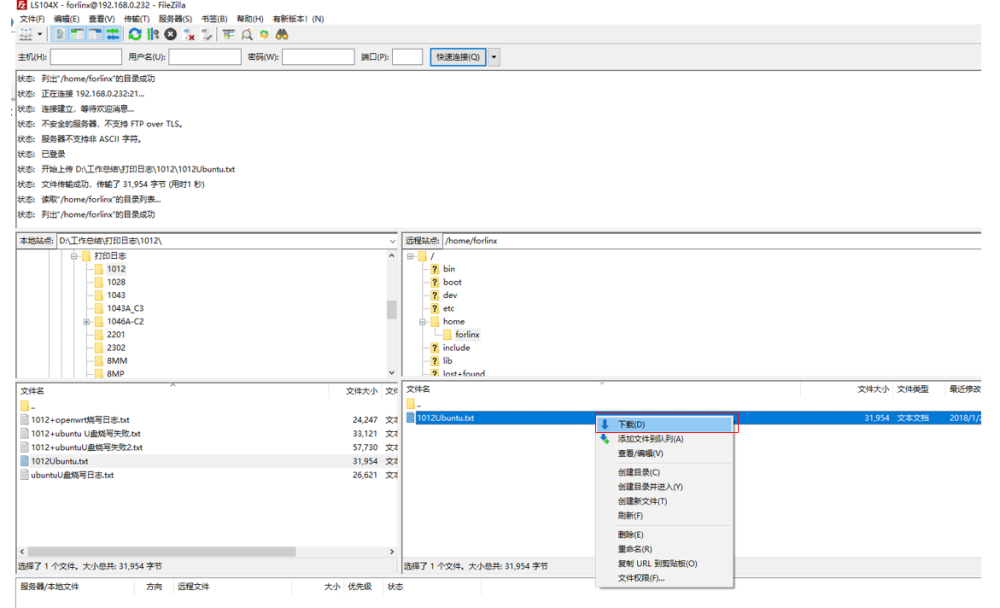
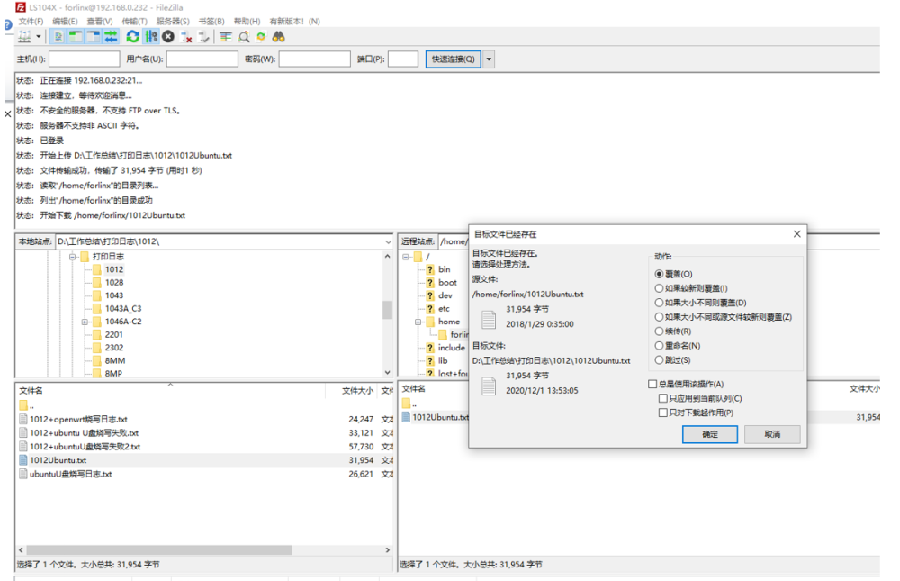
If a file with the same name already exists in the local site, the local file will be “overwritten” by default. Click “OK” to start downloading.
3.1.13 RTC Test
Note: Make sure that the coin cell battery has been installed on the board and that the battery voltage is normal.
The OK1046A-C2 platform uses the RTC clock by default. The test in this section mainly uses the date and hwclock tools to set the software and hardware time to test whether the software clock reads the RTC clock synchronously when the development board is powered off and then powered on.
Set the time as follows command:
root@localhost:~# date -s "2021-10-29 14:41:00" //Set the system time
Fri Oct 29 14:41:00 CST 2021 //Set system time successfully and display back
Note: The format for setting the date is MMDDhhmm[[YY]YY][.ss], where MM is the month, DD is the date, hh is the hour, mm is the minute, the year can be written as 2 digits YY or 4 digits YYYY, and seconds can be represented by .ss.
Read the current time:
root@localhost:~# date // Check the current system time
Fri Oct 29 14:41:03 CST 2021
root@localhost:~# hwclock -w // Write the time to the RTC hardware
root@localhost:~# hwclock -r // Check the current hardware time of the RTC
2021-10-29 14:41:23.072830+0800
Then power down and power up the board, enter the system, and read the system time. After that, we can see that the time has synchronized.
root@localhost:~# date
Fri Oct 29 14:45:30 CST 2021
Note: The time information is not saved in the default RTC, and the hwclock. Service will fail during startup. Please set the RTC time manually according to the above process. If you need to use a network pair, execute the command:
root@localhost:~# systemctl enable systemd-timesyncd.service //Network time service enabling
3.1.14 Watchdog Tests
Watchdog is a function that is often used in embedded systems. The device node of the watchdog in OK1046A-C2 is the/dev/watchdog device file. After the watchdog starts, if the watchdog is not fed, the system will be reset after 10 seconds.
Start the watchdog and feed the dog regularly.
root@localhost:~# watchdog
This command turns on the watchdog and performs a feed, so the system does not reboot.
Note: When you use ctrl+c to end the test program, the system will reset after 10s, if you don’t want to reset, please type watchdog -d to close the watchdog within 10s after ctrl+c.
root@localhost:~# watchdog -d
Watchdog card disabled.
Start the watchdog but do not feed the dog,the system will restart after 10 seconds.
root@localhost:~# watchdogrestart
Restart after 10 seconds
3.1.15 UART Test
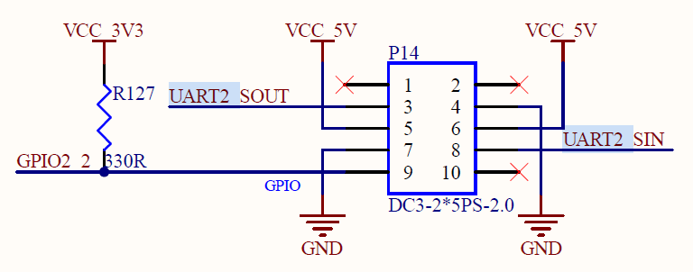Before performing a serial port loopback test, short the serial port to be tested first. UART1, UART2, UART3 and UART4 serial ports are marked in the schematic diagram of OK1046A-C2 platform carrier board, in which UART1 is the debugging serial port, and the default device names in the development board are ttyS0, ttyS1, ttyS2 and ttyS3 respectively. Connect the send and receive pins (3, 8) of UART2 to the computer through the TTL to USB module according to the schematic diagram of the development board. Enable data sending and receiving between the UART of the development board and the serial port tool software on the computer to conduct a serial port test.
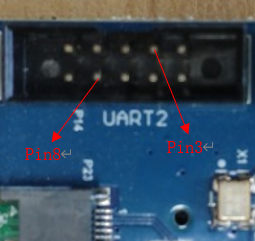
The UART2 of the development board is connected to the computer through the TTL to USB module. After the development board is powered on, it is identified as COM72 in the device manager of the computer (you can set the parameters according to his actual identification of the COM port):

On the computer side, open the serial port tool and select the COM port identified by the computer. The baud rate is 115 200, the data bit is 8, the stop bit is 1, there is no check, no flow control, and the string abcdefg is sent at a fixed time of 1s. After setting the parameters, open the serial port:

Open the test program on the development board terminal to conduct the receiving and sending test. The serial port parameter setting shall be consistent with the setting of the serial port tool. The test program will automatically send the string abcdefgh.
root@localhost:~# uarttest -d /dev/ttyS1 -s
// After execution, the serial port prints the following, indicating that the serial communication is basically normal:
Welcome to uart test
start self test:
forlinx_uart_test.1234567890...
Read Test Data finished,Read:
asdf // Receive the information sent by the serial port tool
Read Test Data finished,Read:
asdf
From the printing information, UART2 can receive the information sent by the serial port tool.
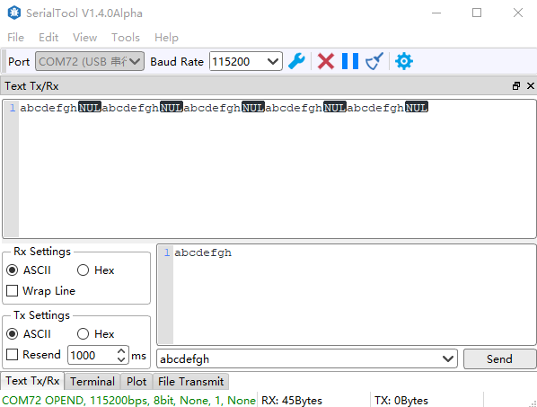
The serial port tool can receive the data sent by the test program.
3.1.16 WIFI Test
The OK1046A-C2 currently supports the INTEL 3168NGW dual-band WiFi module or the INTEL 9260NGW dual-band WiFi module. Take the INTEL 3168NGW module as an example.
Connect the INTEL 3168NGW module to the development board and attach the antenna.

After powering on and starting Linux, you can check whether the device is enumerated successfully through lspci.
root@localhost:~# lspci //List all PCI device
0000:00:00.0 PCI bridge: Freescale Semiconductor Inc Device 81c0 (rev 10)
0001:00:00.0 PCI bridge: Freescale Semiconductor Inc Device 81c0 (rev 10)
0002:00:00.0 PCI bridge: Freescale Semiconductor Inc Device 81c0 (rev 10)
0002:01:00.0 Network controller: Intel Corporation Device 24fb (rev 10)
// INTEL 3168NGW module
View the device node:
root@localhost:~# ifconfig -a
... Omit irrelevant nodes here
virbr0-nic: flags=4098<BROADCAST,MULTICAST> mtu 1500
ether 52:54:00:ef:a1:22 txqueuelen 1000 (Ethernet)
RX packets 0 bytes 0 (0.0 B)
RX errors 0 dropped 0 overruns 0 frame 0
TX packets 0 bytes 0 (0.0 B)
TX errors 0 dropped 0 overruns 0 carrier 0 collisions 0
wlP1p1s0: flags=4099<UP,BROADCAST,MULTICAST> mtu 1500
ether 04:f0:21:46:25:75 txqueuelen 1000 (Ethernet)
RX packets 0 bytes 0 (0.0 B)
RX errors 0 dropped 0 overruns 0 frame 0
TX packets 0 bytes 0 (0.0 B)
TX errors 0 dropped 0 overruns 0 carrier 0 collisions 0
The name of wifi in Ubuntu 18 is no longer similar to wlan0, but in the form of firmware version. As shown above, the name of INTEL 3168NGW module is wlP1p1s0.
3.1.16.1 STA Mode Test
To generate the wpa_supplicant configuration file using the wifi_wpa.sh script, first review the instructions for wifi_wpa.sh.
Description of wifi_wpa.sh parameters:
Parameter |
Description |
|---|---|
-s |
Name of the WIFI to be connected |
-p |
The password for the WiFi network you are connecting to. If there is no encryption, please use -p NONE. |
Here is an example of WIFI name: bjfl, WIFI password: 123456785. (Users modify the WIFI name and password according to the actual situation during the test):
root@localhost:~# /root/Net_Tools/wifi_wpa.sh -s bjfl -p 123456785. //Execute WIFI configuration script
After executing the command, the configuration file /etc/wpa_supplicant.conf is automatically generated.
View the generated configuration file:
root@localhost:~# cat /etc/wpa_supplicant.conf //View the contents of the configuration file and print the following information
#PSK/TKIP
ctrl_interface=/var/run/wpa_supplicant
p2p_disabled=1
network={
ssid="bjfl"
scan_ssid=1
psk="123456785."
key_mgmt=WPA-EAP WPA-PSK IEEE8021X NONE
group=CCMP TKIP WEP104 WEP40
}
Connection test:
root@localhost:~# wpa_supplicant -B -c /etc/wpa_supplicant.conf -i wlP1p1s0 &
Check connection status:
root@localhost:~# wpa_cli status -i wlP1p1s0
//The printed information is as follows:
freq=2412 //WIFI frequency 2.4Ghz
ssid=bjfl //Connected WIFI name
id=0
mode=station //The current mode is STA, which is connected to other wireless routers in the form of station terminal.
pairwise_cipher=CCMP
group_cipher=CCMP
key_mgmt=WPA2-PSK
wpa_state=COMPLETED
ip_address=192.168.2.1 //The IP address of the router
address=04:f0:21:46:25:75 //WIFI module mac addr
uuid=8411871d-0ffc-5208-9eef-0dd993f7a55e //Device ID of the WiFi module of the development board
Get IP:
root@localhost:~# dhclient -i wlP1p1s0 //Obtain IP address through DHCP
root@localhost:~# ifconfig wlP1p1s0 //View the acquired IP address
wlP1p1s0: flags=4163<UP,BROADCAST,RUNNING,MULTICAST> mtu 1500
inet 192.168.5.39 netmask 255.255.254.0 broadcast 192.168.5.255
inet6 fe80::2a7f:cfff:feca:7d1c prefixlen 64 scopeid 0x20<link>
ether 28:7f:cf:ca:7d:1c txqueuelen 1000 (Ethernet)
RX packets 150 bytes 18734 (18.7 KB)
RX errors 0 dropped 0 overruns 0 frame 0
TX packets 13 bytes 2037 (2.0 KB)
TX errors 0 dropped 0 overruns 0 carrier 0 collisions 0
Ping the external network to test whether the network is connected:
root@localhost:~# ping www.baidu.com
PING www.a.shifen.com (220.181.38.149) 56(84) bytes of data.
64 bytes from 220.181.38.149 (220.181.38.149): icmp_seq=1 ttl=50 time=23.6 ms
64 bytes from 220.181.38.149 (220.181.38.149): icmp_seq=2 ttl=50 time=14.2 ms
64 bytes from 220.181.38.149 (220.181.38.149): icmp_seq=3 ttl=50 time=14.6 ms
64 bytes from 220.181.38.149 (220.181.38.149): icmp_seq=4 ttl=50 time=22.4 ms
^C //Type "Ctrl + C" to interrupt the network test
--- www.a.shifen.com ping statistics ---
4 packets transmitted, 4 received, 0% packet loss, time 3004ms
rtt min/avg/max/mdev = 14.280/18.752/23.689/4.327 ms
Set to start automatic connection to WIFI hotspot and obtain IP:
First, modify the WIFI name of the /lib/systemd/system/wpa_supplicant.service file according to the actual situation Here we take wlP1p1s0 as an example.
root@localhost:~# vi /lib/systemd/system/wpa_supplicant.service
[Unit]
Description=WPA supplicant
Before=network.target
After=dbus.service
Wants=network.target
IgnoreOnIsolate=true
[Service]
Type=dbus
RestartSec=15
Restart=on-failure
BusName=fi.w1.wpa_supplicant1
ExecStart=/sbin/wpa_supplicant -u -s -O /run/wpa_supplicant -c /etc/wpa_supplicant.conf -i
wlP1p1s0
[Install]
WantedBy=multi-user.target
Alias=dbus-fi.w1.wpa_supplicant1.service
Enable the wpa_supplicant.service:
root@localhost:~# systemctl enable wpa_supplicant.service
Created symlink /etc/systemd/system/dbus-fi.w1.wpa_supplicant1.service → /lib/systemd/system/wpa_supplicant.service.
Created symlink /etc/systemd/system/multi-user.target.wants/wpa_supplicant.service → /lib/systemd/system/wpa_supplicant.service.
Set to automatically obtain the IP, create the configuration file of the WIFI module, modify the WIFI name, and modify the WIFI name according to the actual situation. Take wlP1p1s0 as an example.
root@localhost:~# vi /etc/systemd/network/wlan0.network
[Match]
Name=wlP1p1s0
KernelCommandLine=!root=/dev/nfs
[Network]
DHCP=yes
Restart the development board and wait for a few seconds to view the IP and other network information dynamically obtained by the WIFI module:
root@localhost:~# ifconfig wlP1p1s0
wlP1p1s0: flags=4163<UP,BROADCAST,RUNNING,MULTICAST> mtu 1500
inet 192.168.5.69 netmask 255.255.255.0 broadcast 192.168.195.255
inet6 2408:841c:5220:3dab:6f0:21ff:fe46:2575 prefixlen 64 scopeid 0x0<global>
inet6 fe80::6f0:21ff:fe46:2575 prefixlen 64 scopeid 0x20<link>
ether 04:f0:21:46:25:75 txqueuelen 1000 (Ethernet)
RX packets 1042 bytes 123004 (123.0 KB)
RX errors 0 dropped 0 overruns 0 frame 0
TX packets 203 bytes 27323 (27.3 KB)
TX errors 0 dropped 0 overruns 0 carrier 0 collisions 0
You can see that the WIFI module has dynamically acquired the IP address for ping test:
root@localhost:~# ping www.baidu.com
PING www.a.shifen.com (220.181.38.150) 56(84) bytes of data.
64 bytes from 220.181.38.150 (220.181.38.150): icmp_seq=1 ttl=50 time=14.5 ms
64 bytes from 220.181.38.150 (220.181.38.150): icmp_seq=2 ttl=50 time=15.2 ms
64 bytes from 220.181.38.150 (220.181.38.150): icmp_seq=3 ttl=50 time=15.2 ms
64 bytes from 220.181.38.150 (220.181.38.150): icmp_seq=4 ttl=50 time=24.1 ms
64 bytes from 220.181.38.150 (220.181.38.150): icmp_seq=5 ttl=50 time=14.7 ms
^C //Type "Ctrl + C" to interrupt the network test
--- www.a.shifen.com ping statistics ---
5 packets transmitted, 5 received, 0% packet loss, time 4005ms
rtt min/avg/max/mdev = 14.522/16.790/24.148/3.693 ms
If you do not want to use the automatic WIFI connection, you can turn off the automatic WIFI connection. The method to turn off the automatic WIFI connection is as follows:
root@localhost:~# systemctl stop wpa_supplicant.service
//Close the wpa_supplicant.service service
root@localhost:~# systemctl disable wpa_supplicant.service
//Disable the WPA _ supplicant. service service at power-on
root@localhost:~# rm /etc/systemd/network/wlan0.network //Delete WIFI auto connect profile
3.1.16.2 AP Mode Test
Description of test environment: Connect the network interface under P3 of the development board to the LAN port of the router with a network cable. The router is located in the 192.168.0.0/24 network segment. Use WIFI to establish a hotspot. The WIFI uses the 192.168.2.0/24 network segment. Use NAT to forward the Internet between the two network segments.
First, you must configure the network port under P3 (fm1-mac4) for normal Internet access. Connect fm1-mac4 to the LAN port of the router. Set fm1-mac4 as the dynamically acquired IP, and create the configuration file as shown below:
root@localhost:~# vi /etc/systemd/network/fm1-mac4.network
[Match]
Name=fm1-mac4
KernelCommandLine=!root=/dev/nfs
[Network]
DHCP=yes
Save and exit after the modification is completed. After restarting for a few seconds, view the network card information of fm1-mac4. It can be seen that the fm1-mac4 network card has dynamically obtained the IP.
root@localhost:~# ifconfig fm1-mac4
fm1-mac4: flags=4163<UP,BROADCAST,RUNNING,MULTICAST> mtu 1500
inet 192.168.0.100 netmask 255.255.255.0 broadcast 192.168.0.255
inet6 fe80::7053:c7ff:fea5:7568 prefixlen 64 scopeid 0x20<link>
ether 72:53:c7:a5:75:68 txqueuelen 1000 (Ethernet)
RX packets 6 bytes 1336 (1.3 KB)
RX errors 0 dropped 0 overruns 0 frame 0
TX packets 66 bytes 8695 (8.6 KB)
TX errors 0 dropped 0 overruns 0 carrier 0 collisions 0
device memory 0x1ae6000-1ae6fff
Perform a ping test after obtaining the IP address to ensure that the forwarded network is normal.
root@localhost:~# ping www.baidu.com
PING www.a.shifen.com (220.181.38.149) 56(84) bytes of data.
64 bytes from 220.181.38.149 (220.181.38.149): icmp_seq=1 ttl=52 time=29.3 ms
64 bytes from 220.181.38.149 (220.181.38.149): icmp_seq=2 ttl=52 time=27.5 ms
64 bytes from 220.181.38.149 (220.181.38.149): icmp_seq=3 ttl=52 time=25.9 ms
64 bytes from 220.181.38.149 (220.181.38.149): icmp_seq=4 ttl=52 time=24.9 ms
64 bytes from 220.181.38.149 (220.181.38.149): icmp_seq=5 ttl=52 time=18.0 ms
64 bytes from 220.181.38.149 (220.181.38.149): icmp_seq=6 ttl=52 time=12.8 ms
64 bytes from 220.181.38.149 (220.181.38.149): icmp_seq=7 ttl=52 time=15.6 ms
^C //Type "Ctrl + C" to interrupt the network test
--- www.a.shifen.com ping statistics ---
7 packets transmitted, 7 received, 0% packet loss, time 6008ms
rtt min/avg/max/mdev = 12.832/22.050/29.384/5.967 ms
Print the information as shown above, indicating that the network can access the Internet, the following WIFI module AP mode configuration.
Modify the hostapd wireless access point program configuration file.
root@localhost:~# vi /etc/hostapd/hostapd.conf
interface=wlP1p1s0 //Name of the access point device
driver=nl80211 //Set the wireless driver
ssid=wifi_test //Name of wireless access point as WIFI-AP
channel=9 //Set the wireless channel
hw_mode=g
macaddr_acl=0
Ignore_broadcast_ssid=0
auth_algs=1
wpa_passphrase=12345678 //Wifi-AP connection password
wpa_key_mgmt=WPA-PSK
wpa_pairwise=TKIP
rsn_pairwise=CCMP
Set the hostapd service to boot:
root@localhost:~# systemctl enable hostapd.service
Synchronizing state of hostapd.service with SysV service script with /lib/systemd/systemd-sysv-install.
Executing: /lib/systemd/systemd-sysv-install enable hostapd
Set automatic dhcpd, modify the configuration file of dhcpd, and add the routing range of WIFI-AP (the bold position is the added content):
root@localhost:~# vi /etc/dhcp/dhcpd.conf
# pool {
# deny members of "foo";
# range 10.0.29.10 10.0.29.230;
# }
#}
subnet 192.168.2.0 netmask 255.255.255.0
{
range 192.168.2.100 192.168.2.250;
option domain-name-servers 8.8.8.8;
option routers 192.168.2.1;
}
Set the IP address of the WIFI module.
root@localhost:~# ifconfig wlP1p1s0 192.168.2.1
You can also directly modify the wifi configuration file wlan0.network to set the IP address of the WIFI module as follows.
root@localhost:~# vi /etc/systemd/network/wlan0.network
[Match]
Name= wlP1p1s0
KernelCommandLine=!root=/dev/nfs
[Network]
Address=192.168.2.1/24
Enable the dhcpd service to run.
root@localhost:~# systemctl enable isc-dhcp-server.service
Set up NAT to turn on forwarding.
root@localhost:~# vi /etc/sysctl.conf
#
# /etc/sysctl.conf - Configuration file for setting system variables
# See /etc/sysctl.d/ for additional system variables.
# See sysctl.conf (5) for information.
#
… //The middle part information is omitted
# Uncomment the next line to enable TCP/IP SYN cookies
# See http://lwn.net/Articles/277146/
# Note: This may impact IPv6 TCP sessions too
#net.ipv4.tcp_syncookies=1
# Uncomment the next line to enable packet forwarding for IPv4
net.ipv4.ip_forward=1 //Remove the comment and open it
Set up forwarding:
root@localhost:~# iptables -t nat -A POSTROUTING -o fm1-mac4 -j MASQUERADE
root@localhost:~# netfilter-persistent save
run-parts: executing /usr/share/netfilter-persistent/plugins.d/15-ip4tables save
run-parts: executing /usr/share/netfilter-persistent/plugins.d/25-ip6tables save
root@localhost:~# netfilter-persistent reload
run-parts: executing /usr/share/netfilter-persistent/plugins.d/15-ip4tables start
run-parts: executing /usr/share/netfilter-persistent/plugins.d/25-ip6tables start
Reboot the board, use the cell phone to search for the wifi signal “wifi_test” and connect to it with the password “12345678”.


You can use the browser to open the web page to test, and the mobile phone can access the Internet normally at this time.
Turn off AP mode:
root@localhost:~# rm /etc/iptables/*
root@localhost:~# rm /etc/systemd/network/wlan0.network
root@localhost:~# systemctl disable isc-dhcp-server.service //Disable DHCP service at power on
Synchronizing state of isc-dhcp-server.service with SysV service script with /lib/systemd/systemd-sysv-install.
Executing: /lib/systemd/systemd-sysv-install disable isc-dhcp-server
root@localhost:~# systemctl disable hostapd.service //Disable the hostapd service at power-on
Synchronizing state of hostapd.service with SysV service script with /lib/systemd/systemd-sysv-install.
Executing: /lib/systemd/systemd-sysv-install disable hostapd
root@localhost:~# reboot //Restart the development board
3.1.17 5G Module On-line Test
OK1046A-C2 supports two types of 5G modules, specifically the Quectel RM500Q-GL module and the Quectel RM500U-CN module. Customers are advised to conduct testing based on the specific 5G module model they have selected.
The corresponding device nodes for 4G and 5G modules are as follows
Equipment model |
Node name |
|---|---|
Quectel RM500Q-GL module |
usb0 |
Quectel RM500U-CN module |
usb0 |
3.1.17.1 Quectel RM500Q-GL Module
Quectel RM500Q-GL module identification
Insert the RM500Q-GL 5G module into the P4 interface of the M.2 B KEY of the carrier board, and connect the antenna, as shown in the figure:
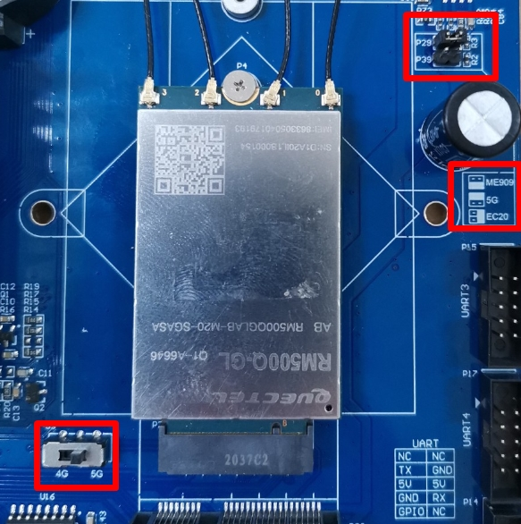
Enter the lsusb command on the OK1046A-C2 console to see if the RM500Q-GL 5G module is successfully identified.
root@localhost:~# lsusb
Bus 006 Device 002: ID 2c7c:0800 //Recogonize RM500Q-GL 5G module
Bus 006 Device 001: ID 1d6b:0003 Linux Foundation 3.0 root hub
Bus 005 Device 001: ID 1d6b:0002 Linux Foundation 2.0 root hub
Bus 004 Device 001: ID 1d6b:0003 Linux Foundation 3.0 root hub
Bus 003 Device 001: ID 1d6b:0002 Linux Foundation 2.0 root hub
Bus 002 Device 001: ID 1d6b:0003 Linux Foundation 3.0 root hub
Bus 001 Device 001: ID 1d6b:0002 Linux Foundation 2.0 root hub
Using the ifconfig -a command, you can see Quectel RM500Q-GL 5G module results in a node name of usb0
If the recognition is successful, dial-up Internet access is next.
Dialing test of RM500Q-GL module
Take inserting mobile SIM card to test 5G Internet access as an example to test whether it is connected to the external network:
root@localhost:~# /root/Net_Tools/quectel-CM &
//Execute Quectel RM5000Q-GL dial-Up script
[1] 4883
[01-28_23:59:01:070] Quectel_QConnectManager_Linux_V1.6.0.26
[01-28_23:59:01:072] Find /sys/bus/usb/devices/6-1 idVendor=0x2c7c idProduct=0x800, bus=0x006, dev=0x002
[01-28_23:59:01:072] Auto find qmichannel = /dev/qcqmi0
[01-28_23:59:01:072] Auto find usbnet_adapter = usb0
[01-28_23:59:01:072] netcard driver = GobiNet, driver version = V1.6.2.9
[01-28_23:59:01:072] qmap_mode = 1, qmap_version = 9, qmap_size = 16384, muxid = 0x81, qmap_netcard = usb0
[01-28_23:59:01:072] Modem works in QMI mode
[01-28_23:59:01:090] Get clientWDS = 7
root@localhost:~# [01-28_23:59:01:122] Get clientDMS = 8
[01-28_23:59:01:154] Get clientNAS = 9
[01-28_23:59:01:186] Get clientUIM = 10
[01-28_23:59:01:219] requestBaseBandVersion RM500QGLABR11A03M4G
[01-28_23:59:01:346] requestGetSIMStatus SIMStatus: SIM_READY
[01-28_23:59:01:379] requestGetProfile[1] ///0
[01-28_23:59:01:410] requestRegistrationState2 MCC: 460, MNC: 0, PS: Attached, DataCap: 5G_SA
//5G signal
[01-28_23:59:01:443] requestQueryDataCall IPv4ConnectionStatus: DISCONNECTED
[01-28_23:59:01:443] ifconfig usb0 0.0.0.0
[01-28_23:59:01:450] ifconfig usb0 down
[01-28_23:59:01:986] requestSetupDataCall WdsConnectionIPv4Handle: 0x87404c30
[01-28_23:59:02:114] ifconfig usb0 up
[01-28_23:59:02:120] dhclient -4 -d --no-pid usb0
Internet Systems Consortium DHCP Client 4.3.5
Copyright 2004-2016 Internet Systems Consortium.
All rights reserved.
For info, please visit https://www.isc.org/software/dhcp/
Listening on LPF/usb0/02:50:f4:00:00:00
Sending on LPF/usb0/02:50:f4:00:00:00
Sending on Socket/fallback
DHCPREQUEST of 10.43.127.141 on usb0 to 255.255.255.255 port 67 (xid=0x54a2480c)
DHCPNAK from 10.35.148.17 (xid=0xc48a254)
DHCPDISCOVER on usb0 to 255.255.255.255 port 67 interval 3 (xid=0xcacc5a70)
DHCPREQUEST of 10.35.148.18 on usb0 to 255.255.255.255 port 67 (xid=0x705accca)
DHCPOFFER of 10.35.148.18 from 10.35.148.17
DHCPACK of 10.35.148.18 from 10.35.148.17
bound to 10.35.148.18 -- renewal in 2900 seconds
View the network card information, and you can see that the device has successfully acquired the IP.
root@localhost:~# ifconfig usb0 //View the NIC information of the 5G module
usb0: flags=193<UP,RUNNING,NOARP> mtu 1500
inet 10.35.148.18 netmask 255.255.255.252
inet6 fe80::50:f4ff:fe00:0 prefixlen 64 scopeid 0x20<link>
ether 02:50:f4:00:00:00 txqueuelen 1000 (Ethernet)
RX packets 4 bytes 1241 (1.2 KB)
RX errors 0 dropped 0 overruns 0 frame 0
TX packets 8 bytes 1664 (1.6 KB)
TX errors 0 dropped 0 overruns 0 carrier 0 collisions 0
Successfully obtain the IP, and you can Ping to test the network connectivity.
root@localhost:~# ping www.baidu.com -I usb0 -c 5 //Test ping Baidu, send and receive 5 packets of data
PING www.a.shifen.com (39.156.66.14) from 10.134.255.146 usb0: 56(84) bytes of data.
64 bytes from 39.156.66.14 (39.156.66.14): icmp_seq=1 ttl=51 time=27.9 ms
64 bytes from 39.156.66.14 (39.156.66.14): icmp_seq=2 ttl=51 time=25.4 ms
64 bytes from 39.156.66.14 (39.156.66.14): icmp_seq=3 ttl=51 time=27.8 ms
64 bytes from 39.156.66.14 (39.156.66.14): icmp_seq=4 ttl=51 time=26.9 ms
64 bytes from 39.156.66.14 (39.156.66.14): icmp_seq=5 ttl=51 time=27.9 ms
--- www.a.shifen.com ping statistics ---
5 packets transmitted, 5 received, 0% packet loss, time 4006ms
rtt min/avg/max/mdev = 25.471/27.245/27.993/0.979 ms //Packet loss rate is 0, 5G can access the Internet
As shown above, the network can access the Internet normally.
3.1.17.2 Quectel RM500U-CN Module
Quectel RM500U-CN module identification
Insert the RM500U-CN 5G module into the P4 interface of the M.2 B KEY of the carrier board, and connect the antenna, as shown in the figure:
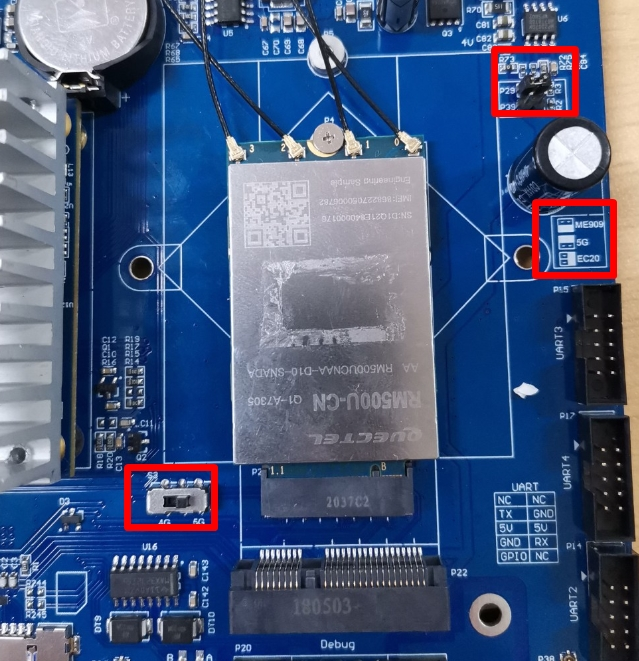
Enter the command on the console of OK1046A-C2 to check whether the RM500U-CN module is successfully identified.
root@localhost:~# lsusb
Bus 006 Device 002: ID 2c7c:0900 //Recogonize Quectel RM500U-CN 5G module
Bus 006 Device 001: ID 1d6b:0003 Linux Foundation 3.0 root hub
Bus 005 Device 001: ID 1d6b:0002 Linux Foundation 2.0 root hub
Bus 004 Device 001: ID 1d6b:0003 Linux Foundation 3.0 root hub
Bus 003 Device 001: ID 1d6b:0002 Linux Foundation 2.0 root hub
Bus 002 Device 001: ID 1d6b:0003 Linux Foundation 3.0 root hub
Bus 001 Device 001: ID 1d6b:0002 Linux Foundation 2.0 root hub
Using the ifconfig -a command, you can see Quectel RM500Q-GL 5G module results in a node name of usb0
Quectel RM500U-CN module dialing test
Take inserting mobile SIM card to test 5G Internet access as an example to test whether it is connected to the external network:
root@localhost:~# /root/Net_Tools/quectel-CM >> /dev/null &
[1] 4867
Internet Systems Consortium DHCP Client 4.3.5
Copyright 2004-2016 Internet Systems Consortium.
All rights reserved.
For info, please visit https://www.isc.org/software/dhcp/
Listening on LPF/usb0/b2:e2:ce:a0:7c:71
Sending on LPF/usb0/b2:e2:ce:a0:7c:71
Sending on Socket/fallback
DHCPREQUEST of 10.58.33.120 on usb0 to 255.255.255.255 port 67 (xid=0x3080cfcc)
DHCPREQUEST of 10.58.33.120 on usb0 to 255.255.255.255 port 67 (xid=0x3080cfcc)
DHCPNAK from 10.163.209.202 (xid=0xcccf8030)
DHCPDISCOVER on usb0 to 255.255.255.255 port 67 interval 3 (xid=0x5790f876)
DHCPREQUEST of 10.163.209.201 on usb0 to 255.255.255.255 port 67 (xid=0x76f89057)
DHCPOFFER of 10.163.209.201 from 10.163.209.202
DHCPACK of 10.163.209.201 from 10.163.209.202
bound to 10.163.209.201 -- renewal in 41571 seconds.
After successful dialing, check the network card information to see that the device has successfully obtained the IP.
root@localhost:~# ifconfig usb0
usb0: flags=4163<UP,BROADCAST,RUNNING,MULTICAST> mtu 1500
inet 10.163.209.201 netmask 255.255.255.255 broadcast 10.163.209.201
inet6 fe80::b0e2:ceff:fea0:7c71 prefixlen 64 scopeid 0x20<link>
ether b2:e2:ce:a0:7c:71 txqueuelen 1000 (Ethernet)
RX packets 5 bytes 1880 (1.8 KB)
RX errors 0 dropped 0 overruns 0 frame 0
TX packets 13 bytes 2150 (2.1 KB)
TX errors 0 dropped 0 overruns 0 carrier 0 collisions
Successfully obtain the IP, and you can Ping to test the network connectivity.
root@localhost:~# ping www.baidu.com -I usb0 -c 5
PING www.wshifen.com (103.235.46.39) from 10.163.209.201 usb0: 56(84) bytes of data.
64 bytes from 103.235.46.39 (103.235.46.39): icmp_seq=1 ttl=46 time=79.0 ms
64 bytes from 103.235.46.39 (103.235.46.39): icmp_seq=2 ttl=46 time=96.5 ms
64 bytes from 103.235.46.39 (103.235.46.39): icmp_seq=3 ttl=46 time=77.9 ms
64 bytes from 103.235.46.39 (103.235.46.39): icmp_seq=5 ttl=46 time=85.7 ms
--- www.wshifen.com ping statistics ---
5 packets transmitted, 4 received, 20% packet loss, time 4025ms
rtt min/avg/max/mdev = 77.933/84.820/96.536/7.401 ms
3.1.18 USER_LED and USER Key Test
The OK1046A-C2 supports one user-defined USER_LED (USER_LED in the middle of D1) and one user-defined key USER (the key near the USB port). As follows:

The testing method is as follows:
USER_LED light on and off
root@localhost:~# echo 1 > /sys/class/leds/USER_LED/brightness
// Input 1 into the file “brightness” to turn on the USER_LED.
root@localhost:~# echo 0 > /sys/class/leds/USER_LED/brightness
// Input 0 into the file “brightness” to turn off the USER_LED.
USER Key Test
First check the status of the USER key:
root@localhost:~# cat /root/DI/USER_DI // View the content of the file “USER_DI”.
1 // It can be seen that the USER button is at a high level, indicating that it is not pressed.
Press and hold down the USER button to run again:
root@localhost:~# cat /root/DI/USER_DI // View the content of the file “USER_DI”.
0 // It can be seen that the USER button is at a low level, indicating that it is pressed.
3.2 Software Resource Test
3.2.1 Dynamic/Static IP Configuration Test
Note:
The settings of other network ports are similar to this. Create the corresponding *.network file and modify the Name field;
The IP address can only be seen when the network port is plugged into a network cable.
By default, the OK1046A-C3 development board sets the fm1-mac3 (on P13) network port to the static IP: 192.168.0.232.
root@localhost:~# cat /etc/systemd/network/fm1-mac3.network
[Match]
Name=fm1-mac3
KernelCommandLine=!root=/dev/nfs
[Network]
#DHCP=yes
Address=192.168.0.232/24
Gateway=192.168.0.1
If you want to set other ports as static IPs, here is an example of setting the static IP of the fm1-mac4 (under P13) port to 192.168.1.25,to create a configuration file for the fm1-mac4 port,please refer to the following settings.
root@localhost:~# vi /etc/systemd/network/fm1-mac4.network
[Match]
Name=fm1-mac4
KernelCommandLine=!root=/dev/nfs
[Network]
#DHCP=yes
Address=192.168.1.25/24
Gateway=192.168.1.1
If you want to set to obtain IP dynamically, please refer to the following settings:
root@localhost:~# cp /etc/systemd/network/fm1-mac3.network /etc/systemd/network/fm1-mac3.network.bak
// Back up the configuration file of the network interface fm1-mac3.
root@localhost:~# vi /etc/systemd/network/fm1-mac3.network
// Modify the configuration file of the network interface fm1-mac3.
[Match]
Name=fm1-mac3
KernelCommandLine=!root=/dev/nfs
[Network]
DHCP=yes // Set to obtain an IP address dynamically.
#Address=192.168.0.232/24 // Comment out the static IP address and subnet mask.
#Gateway=192.168.0.1 // Comment out the default gateway of the static IP address.
Set DNS，modify/etc/system/resolved.conf to:
root@localhost:~# vi /etc/systemd/resolved.conf
[Resolve]
DNS=8.8.8.8 //Add DNS
#FallbackDNS=
#Domains=
#LLMNR=no
#MulticastDNS=no
#DNSSEC=no
#Cache=yes
#DNSStubListener=yes
After the modification is completed, save and exit, connect the fm1-mac3 port to the router that can dynamically assign IP via the network cable, and restart the development board.
root@localhost:~# ifconfig fm1-mac3 //View acquired IP
fm1-mac3: flags=4163<UP,BROADCAST,RUNNING,MULTICAST> mtu 1500
inet 192.168.0.100 netmask 255.255.255.0 broadcast 192.168.0.255
inet6 fe80::5860:46ff:feab:db46 prefixlen 64 scopeid 0x20<link>
ether 5a:60:46:ab:db:46 txqueuelen 1000 (Ethernet)
RX packets 4 bytes 1244 (1.2 KB)
RX errors 0 dropped 0 overruns 0 frame 0
TX packets 58 bytes 7646 (7.6 KB)
TX errors 0 dropped 0 overruns 0 carrier 0 collisions 0
device memory 0x1ae4000-1ae4fff
The ping test indicates that the network is stable, and you can access the extranet without any issues.
root@localhost:~# ping www.baidu.com
PING www.a.shifen.com (220.181.38.149) 56(84) bytes of data.
64 bytes from 220.181.38.149 (220.181.38.149): icmp_seq=1 ttl=52 time=24.8 ms
64 bytes from 220.181.38.149 (220.181.38.149): icmp_seq=2 ttl=52 time=16.7 ms
64 bytes from 220.181.38.149 (220.181.38.149): icmp_seq=3 ttl=52 time=14.8 ms
64 bytes from 220.181.38.149 (220.181.38.149): icmp_seq=4 ttl=52 time=17.1 ms
64 bytes from 220.181.38.149 (220.181.38.149): icmp_seq=5 ttl=52 time=17.5 ms
64 bytes from 220.181.38.149 (220.181.38.149): icmp_seq=6 ttl=52 time=20.1 ms
64 bytes from 220.181.38.149 (220.181.38.149): icmp_seq=7 ttl=52 time=18.8 ms
^C //Enter "crtl + C" to terminate the test
--- www.a.shifen.com ping statistics ---
7 packets transmitted, 7 received, 0% packet loss, time 6010ms
rtt min/avg/max/mdev = 14.830/18.610/24.873/2.990 ms
3.2.2 Time Zone Configuration Test
Note: The OK1046A-C2 platform has set the time to Beijing Time by default. If you do not use other time zones, you can skip this section.
Enter the tzselect command at the terminal command line to set it up.
root@localhost:~# tzselect //tzselect adjust time zone command
Please identify a location so that time zone rules can be set correctly.
Please select a continent, ocean, "coord", or "TZ".
1) Africa
2) Americas
3) Antarctica
4) Asia
5) Atlantic Ocean
6) Australia
7) Europe
8) Indian Ocean
9) Pacific Ocean
10) coord - I want to use geographical coordinates.
11) TZ - I want to specify the time zone using the Posix TZ format.
#？ 4 //When prompted, select 4, Asia
Please select a country whose clocks agree with yours.
1) Afghanistan 18) Israel 35) Palestine
2) Armenia 19) Japan 36) Philippines
3) Azerbaijan 20) Jordan 37) Qatar
4) Bahrain 21) Kazakhstan 38) Russia
5) Bangladesh 22) Korea (North) 39) Saudi Arabia
6) Bhutan 23) Korea (South) 40) Singapore
7) Brunei 24) Kuwait 41) Sri Lanka
8) Cambodia 25) Kyrgyzstan 42) Syria
9) China 26) Laos 43) Taiwan
10) Cyprus 27) Lebanon 44) Tajikistan
11) East Timor 28) Macau 45) Thailand
12) Georgia 29) Malaysia 46) Turkmenistan
13) Hong Kong 30) Mongolia 47) United Arab Emirates
14) India 31) Myanmar (Burma) 48) Uzbekistan
15) Indonesia 32) Nepal 49) Vietnam
16) Iran 33) Oman 50) Yemen
17) Iraq 34) Pakistan
#? 9 //Follow the prompts to select 9, China
Please select one of the following time zone regions.
1) Beijing Time
2) Xinjiang Time
#? 1 //Follow the prompts to select 1，Beijing time
The following information has been given:
China
Beijing Time
Therefore TZ='Asia/Shanghai' will be used.
Selected time is now: Thu Feb 15 17:26:11 CST 2018.
Universal Time is now: Thu Feb 15 09:26:11 UTC 2018.
Is the above information OK?
1) Yes
2) No
#? yes //Enter yes according to the prompt, and confirm to change the time zone to China Beijing Time, China Shanghai East Zone 8 Time Zone
You can make this change permanent for yourself by appending the line
TZ='Asia/Shanghai'; export TZ
to the file '.profile' in your home directory; then log out and log in again.
Here is that TZ value again, this time on standard output so that you
can use the /usr/bin/tzselect command in shell scripts:
Asia/Shanghai
Follow the print information prompts above to modify the.profile file
root@localhost:~# vi ~/.profile
# ~/.profile: executed by Bourne-compatible login shells.
TZ='Asia/Shanghai';
export TZ //These two lines are the added content
if [ "$BASH" ]; then
if [ -f ~/.bashrc ]; then
. ~/.bashrc
fi
fi
mesg n || true
3.2.3 Samba Test
Samba is a free software that implements the SMB protocol on Linux and UNIX systems. It consists of a server and a client program. SMB (Information Service) is a communication for sharing files and printers on a local area, and it provides sharing services for sources such as files and printers on different computers in the local area. The SMB protocol is a client/server protocol that allows clients to access shared file systems, printers, and other resources on a server. By setting up “NetBIOS over TCP/IP”, Samba can share resources not only with LAN hosts, but also with computers around the world.
The OK1046A-C2 platform installs the samba service by default, which allows you to access the OK1046A-C2’s sata hard disk and other storage devices over the network.
View the configuration file:
root@localhost:~# cat /etc/samba/smb.conf
root@localhost:~# vi /etc/samba/smb.conf //Modify the configuration file and add the following content at the end of the text
[share]
comment = Share Folder require password
browseable = yes
path = /boot
create mask = 0777
directory mask = 0777
valid users = share
force user = nobody
force group = nogroup
public = yes
writable = yes
available = yes
If you have made changes to the configuration file, please restart samba:
root@localhost:~# systemctl restart smbd.service
Window visit test:
View development board IP:
root@localhost:~# ifconfig fm1-mac3
fm1-mac3: flags=4163<UP,BROADCAST,RUNNING,MULTICAST> mtu 1500
inet 192.168.0.232 netmask 255.255.255.0 broadcast 192.168.0.255
inet6 fe80::5860:46ff:feab:db46 prefixlen 64 scopeid 0x20<link>
ether 5a:60:46:ab:db:46 txqueuelen 1000 (Ethernet)
RX packets 36 bytes 3760 (3.7 KB)
RX errors 0 dropped 0 overruns 0 frame 0
TX packets 32 bytes 3429 (3.4 KB)
TX errors 0 dropped 0 overruns 0 carrier 0 collisions 0
device memory 0x1ae4000-1ae4fff
Press the shortcut key combination “Windows + R” to open the Run dialog box, and type in “\192.168.0.232”, on a Windows computer within the same local area network.

Click “OK”, and the following serial port will pop up. Enter the access user name and password, both of which are “share”.

Click “OK” to enter the shared folder and create the test file test.txt.
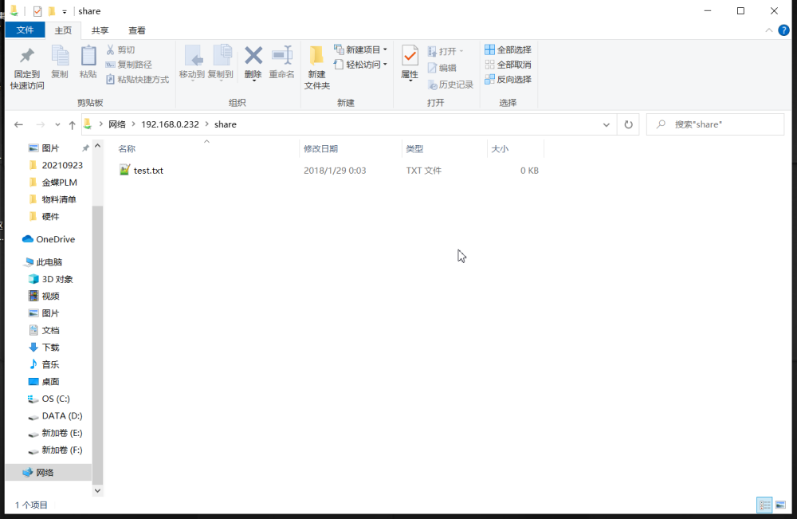
After successful creation, view the newly added file on the development board.
root@localhost:~# ls -l /boot //View files in the/boot directory
total 0 //You can see the newly added file test.txt
-rwxr--r-- 1 root root 0 Feb 15 17:41 test.txt
You can see the newly added file test. Txt on the development board.
3.2.4 Lighttpd Test
Note:
Before the test, it is recommended to set the network port to obtain IP dynamically. See the dynamic/static IP configuration test for details;
Take the fm1-mac3 (on P13) network port as an example for testing;
KODExplorer is currently divided into multiple versions. The version used in this section is the free version. If there are any updates to the download link, please visit the official website of KODExplorer to obtain it. If any customers require using KODExplorer for commercial purposes, please contact KODCloud for authorization.
This section will describe in detail how to build the OK1046A-C2 platform into an exclusive home private cloud platform, using lighttpd + PHP as a background service. PHP page uses KODExplorer (formerly known as Mango Cloud), which is an open source WEB web version lightweight private cloud network disk tool based on PHP development. Moreover, KODExplorer also provides adaptation support for the mobile version (mobile terminal), so that you can use your mobile phone to remotely access and use your files on the network disk at any time even when you are away from home, which is worthy of praise.
Ensure that the development board has normal access to the network, and is in the same LAN with the PC, and can be downloaded to the cloud:
oot@localhost:~# mkdir /var/www/html -p //Recursively create a folder directory
root@localhost:~# cd /var/www/html/ //Switch the current working directory to HTML
root@localhost:/var/www/html# wget http://static.kodcloud.com/update/download/kodexplorer4.37.zip
//Download the compressed package using the download tool
--2021-10-15 13:49:02-- http://static.kodcloud.com/update/download/kodexplorer4.37.zip
Resolving static.kodcloud.com (static.kodcloud.com)... 124.236.20.206
Connecting to static.kodcloud.com (static.kodcloud.com)|124.236.20.206|:80... connected.
HTTP request sent, awaiting response... 200 OK
Length: 13845184 (13M) [application/octet-stream]
Saving to: ‘kodexplorer4.37.zip’
kodexplorer4.37.zip 100%[========================================================================================================================================>] 13.20M 4.51MB/s in 2.9s
2021-10-15 13:49:05 (4.51 MB/s) - ‘kodexplorer4.37.zip’ saved [13845184/13845184]
root@localhost:~# unzip kodexplorer4.37.zip //Unzip the compressed package
root@localhost:~# chown -R www-data:www-data /var/www/html //Authorized folder
Make sure that the development board can access the network normally, and check the IP of the development board according to the actual network port you use. Here, take fm1-mac3 (on P13) as an example.
root@localhost:~# ifconfig fm1-mac3
fm1-mac3: flags=4163<UP,BROADCAST,RUNNING,MULTICAST> mtu 1500
inet 192.168.0.100 netmask 255.255.255.0 broadcast 192.168.0.255
inet6 fe80::5860:46ff:feab:db46 prefixlen 64 scopeid 0x20<link>
ether 5a:60:46:ab:db:46 txqueuelen 1000 (Ethernet)
RX packets 3 bytes 1198 (1.1 KB)
RX errors 0 dropped 0 overruns 0 frame 0
TX packets 41 bytes 5201 (5.2 KB)
TX errors 0 dropped 0 overruns 0 carrier 0 collisions 0
device memory 0x1ae4000-1ae4fff
Open a browser and enter 192.168.0.100 in the address bar.

Please follow the prompts to set the administrator account password and login, here you can set the password to 123456 as an example, you can set it according to the actual situation.
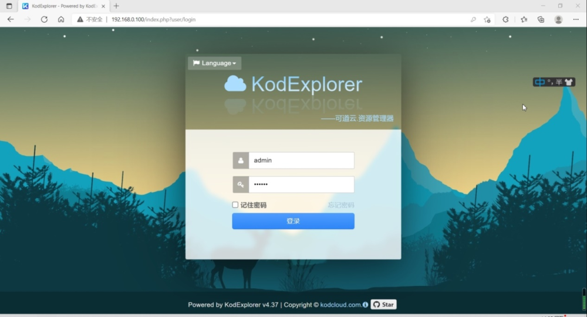
Click Login to enter the system, and click the “File Management” menu to browse the files on the development board.
Drag the test video file on Windows to the browser window to start uploading automatically.

Right click on the uploaded file and select Open to play the video.

In addition to video files, it also supports playing audio files and editing text online. At the same time, all the functions supported by the PC can also be experienced on the mobile device. Connect the mobile phone to the same LAN, open the mobile browser, and enter 192.168.0.100 to experience.

Enter the account password to log in to the system. After entering the system, you can see the video just uploaded. Other functions can be experienced by themselves.
3.2.5 Virtualization Test
3.2.5.1 Docker Basic Environment Test
Note: Make sure that the clock of OK 1046A-C2 is accurate, otherwise the certificate will expire when pulling the image.
Docker is an advanced container engine based on LXC, and docker is a containerized way of working. Just as we would package a variety of different goods into a single container for standardized management and transportation, in the docker world we package our applications and the runtime environments on which they depend into a single image and distribute it to any docker-enabled platform, where we can run our applications and provide services. Docker is a process-level container. It is officially recommended that a docker run only one program. Of course, you can run thousands of dockers on your host.
Download hello-world image;
root@localhost:~# docker pull hello-world
Using default tag: latest
latest: Pulling from library/hello-world
109db8fad215: Pull complete
Digest: sha256:7d91b69e04a9029b99f3585aaaccae2baa80bcf318f4a5d2165a9898cd2dc0a1
Status: Downloaded newer image for hello-world:latest
Check local docker image;
root@localhost:~# docker image ls
REPOSITORY TAG IMAGE ID CREATED SIZE
hello-world latest bc11b176a293 2 months ago 9.14kB
Run hello-world test program;
root@localhost:~# docker container run hello-world
Hello from Docker!
This message shows that your installation appears to be working correctly.
To generate this message, Docker took the following steps:
1. The Docker client contacted the Docker daemon.
2. The Docker daemon pulled the "hello-world" image from the Docker Hub.
(arm64v8)
3. The Docker daemon created a new container from that image which runs the
executable that produces the output you are currently reading.
4. The Docker daemon streamed that output to the Docker client, which sent it
to your terminal.
To try something more ambitious, you can run an Ubuntu container with:
$ docker run -it ubuntu bash
Share images, automate workflows, and more with a free Docker ID:
https://hub.docker.com/
For more examples and ideas, visit:
https://docs.docker.com/get-started/
Download Ubuntu image;
root@localhost:~# docker pull qoriq/arm64-ubuntu
Using default tag: latest
latest: Pulling from qoriq/arm64-ubuntu
a3ed95caeb02: Pull complete
9025035f8d16: Pull complete
d54663dfcaf9: Pull complete
b940f6a4f33c: Pull complete
688957367bc4: Pull complete
88ca67eab938: Pull complete
f5f1c1a40562: Pull complete
357cdf8f1a01: Pull complete
de8e5d34ebd8: Pull complete
811aa6d4eba3: Pull complete
0dc75b6c54d0: Pull complete
654cadd8a53b: Pull complete
40d300e17719: Pull complete
ce42abd87d1e: Pull complete
Digest: sha256:eaef3a08336f59155e6cfb61bf55688711214561ddf00817b5c848211ac66b00
Status: Downloaded newer image for qoriq/arm64-ubuntu:latest
To view the docker image that has been downloaded.
root@localhost:~# docker image ls
REPOSITORY TAG IMAGE ID CREATED SIZE
hello-world latest bc11b176a293 2 months ago 9.14kB
qoriq/arm64-ubuntu latest 903eaef3b724 5 years ago 327MB
Start the lighttp service running inside docker Ubuntu;
root@localhost:~# docker run -d -p 30081:80 --name=sandbox1 \
-h sandbox1 qoriq/arm64-ubuntu \
bash -c "lighttpd -f /etc/lighttpd/lighttpd.conf -D"
bb52adbbfe3f19889b2b4d77a41aa974410a266d1db3523ca35285c7d06b84ef
View the current docker container running status;
root@localhost:~# docker ps
CONTAINER ID IMAGE COMMAND CREATED STATUS PORTS NAMES
bb52adbbfe3f qoriq/arm64-ubuntu "bash -c 'lighttpd -…" 4 minutes ago Up 4 minutes 0.0.0.0:30081->80/tcp sandbox1
Other hosts access the HTTP service in docker through a web browser;

8. Other related commands.
Command |
Comment |
|---|---|
docker stop container ID |
Stop the running docker |
docker rm container ID |
Delete the existing docker container |
docker rmi image_name |
Delete the downloaded docker container |
docker ps -a |
View the docker running status |
docker restart containerID |
Start the corresponding container |
3.2.5.2 LXC Basic Environment Test
Note: Please ensure that OK1046A-C2 can access the external network normally in this test, and ensure that the clock of OK1046A-C2 is accurate, otherwise the authentication will expire when pulling the image.
The full name of LXC is Linux Container. LXC is a lightweight virtualization technology that supports containers natively in Linux. It can be said that docker is based on LXC, providing a high-level encapsulation of LXC and developing standard configuration methods.
LXC is positioned as an alternative to traditional virtual machines, focusing on delivering one operating system at a time, such as Ubuntu, Debian, and so on. Docker is application-oriented and officially advocates that a container is an application and is application-centric. So, docker also provides a unified packaging and deployment solution, namely Dockerfile, version control, image reuse, remote repositories for image sharing, and so on.
Install ubuntu16.04;
View LXC version
root@localhost:~# lxc --version
3.0.1
The first time you run LXC, you need to do it once (wait a few minutes):
root@localhost:~# lxd -v init
//Press the Enter key to select the default according to the print information prompt.
Would you like to use LXD clustering? (yes/no) [default=no]:
Do you want to configure a new storage pool? (yes/no) [default=yes]:
Name of the new storage pool [default=default]:
Name of the storage backend to use (dir, lvm) [default=dir]:
Would you like to connect to a MAAS server? (yes/no) [default=no]:
Would you like to create a new local network bridge? (yes/no) [default=yes]:
What should the new bridge be called? [default=lxdbr0]:
What IPv4 address should be used? (CIDR subnet notation, “auto” or “none”) [default=auto]:
What IPv6 address should be used? (CIDR subnet notation, “auto” or “none”) [default=auto]:
Would you like LXD to be available over the network? (yes/no) [default=no]:
Would you like stale cached images to be updated automatically? (yes/no) [default=yes]
Would you like a YAML "lxd init" preseed to be printed? (yes/no) [default=no]:
Displays the available images:
root@localhost:~# lxc image list images: | less
To create a Ubuntu 16.04 container:
root@localhost:~# lxc launch ubuntu:16.04 test
Creating test
Retrieving image: rootfs: 100% (1.58MB/s)
Starting test
Display the local container;
root@localhost:~# lxc list
+------+---------+--------------------+-----------------------------------------------+------------+-----------+
| NAME | STATE | IPV4 | IPV6 | TYPE | SNAPSHOTS |
+------+---------+--------------------+-----------------------------------------------+------------+-----------+
| test | RUNNING | 10.253.45.4 (eth0) | fd42:5801:6543:9186:216:3eff:fe5e:7bf6 (eth0) | PERSISTENT | 0 |
+------+---------+--------------------+-----------------------------------------------+------------+-----------+
View the container network;
root@localhost:~# lxc network show lxdbr0
config:
ipv4.address: 10.253.45.1/24
ipv4.nat: "true"
ipv6.address: fd42:5801:6543:9186::1/64
ipv6.nat: "true"
description: ""
name: lxdbr0
type: bridge
used_by:
- /1.0/containers/test
managed: true
status: Created
locations:
- none
View container information;
root@localhost:~# lxc info test
Name: test
Remote: unix://
Architecture: aarch64
Created: 2021/09/13 06:21 UTC
Status: Running
Type: persistent
Profiles: default
Pid: 6517
Ips:
eth0: inet 10.253.45.4 veth6Y71T4
eth0: inet6 fd42:5801:6543:9186:216:3eff:fe5e:7bf6 veth6Y71T4
eth0: inet6 fe80::216:3eff:fe5e:7bf6 veth6Y71T4
lo: inet 127.0.0.1
lo: inet6 ::1
Resources:
Processes: 21
CPU usage:
CPU usage (in seconds): 17
Memory usage:
Memory (current): 110.64MB
Memory (peak): 256.80MB
Network usage:
eth0:
Bytes received: 19.52kB
Bytes sent: 5.09kB
Packets received: 83
Packets sent: 45
lo:
Bytes received: 0B
Bytes sent: 0B
Packets received: 0
Packets sent: 0
sit0:
Bytes received: 0B
Bytes sent: 0B
Packets received: 0
Packets sent: 0
View the container configuration;
root@localhost:~# lxc config show test
architecture: aarch64
config:
image.architecture: arm64
image.description: ubuntu 16.04 LTS arm64 (release) (20210429)
image.label: release
image.os: ubuntu
image.release: xenial
image.serial: "20210429"
image.version: "16.04"
volatile.base_image: 57d6d0f42b3fa248416472e3ca873aa057084031841672a49b51b50edec49e93
volatile.eth0.hwaddr: 00:16:3e:5e:7b:f6
volatile.idmap.base: "0"
volatile.idmap.next: '[{"Isuid":true,"Isgid":false,"Hostid":165536,"Nsid":0,"Maprange":65536},{"Isuid":false,"Isgid":true,"Hostid":165536,"Nsid":0,"Maprange":65536}]'
volatile.last_state.idmap: '[{"Isuid":true,"Isgid":false,"Hostid":165536,"Nsid":0,"Maprange":65536},{"Isuid":false,"Isgid":true,"Hostid":165536,"Nsid":0,"Maprange":65536}]'
volatile.last_state.power: RUNNING
devices: {}
ephemeral: false
profiles:
- default
stateful: false
description: ""
Run the container bash;
root@localhost:~# lxc exec test -- /bin/bash
root@test:~# lsb_release -a
No LSB modules are available.
Distributor ID: Ubuntu
Description: Ubuntu 16.04.7 LTS
Release: 16.04
Codename: xenial
root@test:~#
root@test:~# exit 。
exit
Note: If you are prompted that the container is not started, perform the lxc start test manually.
root@localhost:~# lsb_release -a
No LSB modules are available.
Distributor ID: Ubuntu
Description: Ubuntu 18.04.1 LTS
Release: 18.04
Codename: bionic
File download test;
root@localhost:~# ls
dhry.res DI Net_Tools
root@localhost:~# lxc file pull test/etc/hosts .
root@localhost:~# ls
hosts wifi.sh
File upload test;
root@localhost:~# ls
dhry.res DI hosts Net_Tools
root@localhost:~# lxc file push test/etc/hosts .
root@localhost:~# ls
hosts wifi.sh
Stop the container;
root@localhost:~# lxc stop test
root@localhost:~# lxc list
+------+---------+------+------+------------+-----------+
| NAME | STATE | IPV4 | IPV6 | TYPE | SNAPSHOTS |
+------+---------+------+------+------------+-----------+
| test | STOPPED | | | PERSISTENT | 0 |
+------+---------+------+------+------------+-----------+
Delete the container.
root@localhost:~# lxc delete test
3.2.5.3 QEMU Basic Environment Test
QEMU is a general-purpose open source machine emulator and virtualizer. QEMU supports two modes of operation: user mode emulation and system mode emulation. User-mode emulation allows a process built by one CPU to execute on another CPU (performing dynamic translation of host CPU instructions and translating Linux system calls accordingly). System mode emulation, which allows the entire system to be emulated, including the processor and supporting peripherals.
The simulation of the system on the OK1046A-C2 platform will be described below. Take the development board IP 192.168.1.105 as an example.
Path: OK 1046A-C2 (Linux) user’s profile \ tools \ qemu
Please copy the qemu folder under the user profile tool directory to the root directory of the development board:
root@localhost:~# ls /qemu/
qemu-ifup qemu.ext4.img
Run KVM using Hugetlbfs;
root@localhost:~# echo 256 > /proc/sys/vm/nr_hugepages
root@localhost:~# mkdir /boot/hugetlbfs
root@localhost:~# mount -t hugetlbfs none /boot/hugetlbfs/
Start qemu;
root@localhost:~# qemu-system-aarch64 -smp 1 -m 512 -mem-path /boot/hugetlbfs/ \-cpu host \
-machine type=virt -kernel /run/media/mmcblk0p2/boot/Image -enable-kvm -display none \
-serial tcp::4446,server,telnet -drive if=none,file=/qemu/qemu.ext4.img,id=foo,format=raw \
-device virtio-blk-device,drive=foo -append 'root=/dev/vda rw console=ttyAMA0 rootwait \
earlyprintk' -monitor stdio
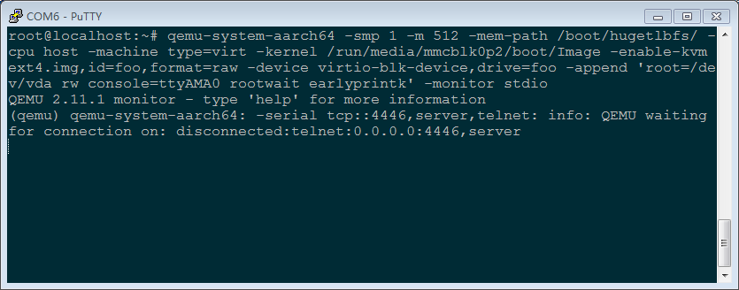
The cmd of the windows host on the same LAN uses telnet to log in to the virtual machine:
telnet 192.168.1.105 4446

Configure the network;
Plug the network cable into the fm1-mac6 interface to see the IP acquired automatically
root@localhost:~# ifconfig fm1-mac6

Configure the network bridge on OK1046A-C3. Take 192.168.1.105 as an example. Please refer to the actual IP (ensure that the development board uses the IP).
root@localhost:~# brctl addbr br0
root@localhost:~# ifconfig br0 192.168.1.105 netmask 255.255.255.0
root@localhost:~# ifconfig fm1-mac6 0.0.0.0
root@localhost:~# brctl addif br0 fm1-mac6
Start qemu
root@localhost:~# qemu-system-aarch64 -smp 1 -m 512 -cpu host -machine type=virt \
-kernel /run/media/mmcblk0p2/boot/Image -enable-kvm -display none \
-serial tcp::4446,server,telnet \
-drive if=none,file=/qemu/qemu.ext4.img,id=foo,format=raw -device virtio-blk-device,drive=foo \
-netdev tap,id=tap0,script=/qemu/qemu-ifup,downscript=no,ifname="tap0" \
-device virtio-net-pci,netdev=tap0 -append 'root=/dev/vda rw console=ttyAMA0 rootwait \
earlyprintk' -monitor stdio
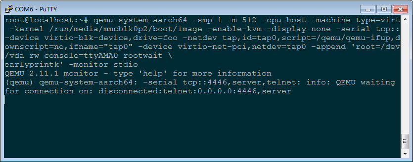
The cmd of a windows host in the same LAN uses telnet to log in to the virtual machine.
telnet 192.168.1.105 4446
View the status of the network card
/# ifconfig -a
eth0 Link encap:Ethernet HWaddr 52:54:00:12:34:56
BROADCAST MULTICAST MTU:1500 Metric:1
RX packets:0 errors:0 dropped:0 overruns:0 frame:0
TX packets:0 errors:0 dropped:0 overruns:0 carrier:0
collisions:0 txqueuelen:1000
RX bytes:0 (0.0 B) TX bytes:0 (0.0 B)
lo Link encap:Local Loopback
LOOPBACK MTU:65536 Metric:1
RX packets:0 errors:0 dropped:0 overruns:0 frame:0
TX packets:0 errors:0 dropped:0 overruns:0 carrier:0
collisions:0 txqueuelen:1000
RX bytes:0 (0.0 B) TX bytes:0 (0.0 B)
sit0 Link encap:IPv6-in-IPv4
NOARP MTU:1480 Metric:1
RX packets:0 errors:0 dropped:0 overruns:0 frame:0
TX packets:0 errors:0 dropped:0 overruns:0 carrier:0
collisions:0 txqueuelen:1000
RX bytes:0 (0.0 B) TX bytes:0 (0.0 B)
Configure the network card IP:
/# ifconfig eth0 192.168.1.201 netmask 255.255.255.0
Ping test：
/# ping 192.168.1.1

Use a virtual disk;
Create a disk file on the OK1046A-C2 platform
root@localhost:~# dd if=/dev/zero of=/boot/my_guest_disk bs=4K count=4K
Start qemu
root@localhost:~# qemu-system-aarch64 -smp 1 -m 512 -cpu host -machine type=virt \
-kernel /run/media/mmcblk0p2/boot/Image -enable-kvm -display none \
-serial tcp::4446,server,telnet \
-drive if=none,file=/qemu/qemu.ext4.img,id=foo,format=raw -device virtio-blk-device,drive=foo \
-drive if=none,file=/boot/my_guest_disk,cache=none,id=user,format=raw \
-device virtio-blk-pci,drive=user -append 'root=/dev/vda rw console=ttyAMA0 rootwait earlyprintk' \
-monitor stdio
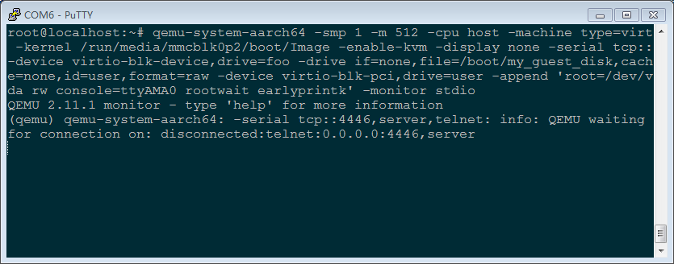
The cmd of the windows host on the same LAN uses telnet to log in to the virtual machine (IP of fm1-mac6)
telnet 192.168.1.105 4446
View the virtual disk
/#ls /dev/vdb
/dev/vdb
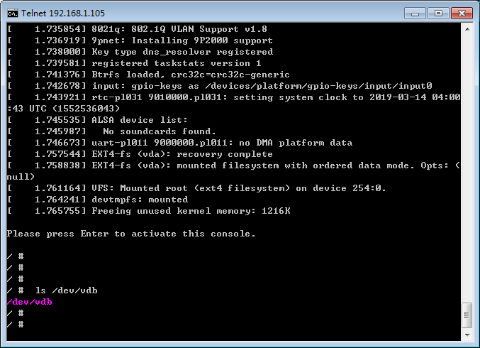
Partition the virtual disk using fdisk
/# fdisk /dev/vdb
Welcome to fdisk (util-linux 2.27.1).
Changes will remain in memory only, until you decide to write them.
Be careful before using the write command.
Device does not contain a recognized partition table.
Created a new DOS disklabel with disk identifier 0xc9820d64.
Command (m for help):
Command (m for help): p
Disk /dev/vdb: 16 MiB, 16777216 bytes, 32768 sectors
Units: sectors of 1 * 512 = 512 bytes
Sector size (logical/physical): 512 bytes / 512 bytes
I/O size (minimum/optimal): 512 bytes / 512 bytes
Disklabel type: dos
Disk identifier: 0xc9820d64
Command (m for help):
Command (m for help): n
Partition type
p primary (0 primary, 0 extended, 4 free)
e extended (container for logical partitions)
Select (default p): p
Partition number (1-4, default 1):
First sector (2048-32767, default 2048):
Last sector, +sectors or +size{K,M,G,T,P} (2048-32767, default 32767):
Created a new partition 1 of type 'Linux' and of size 15 MiB.
Command (m for help):
Command (m for help): p
Disk /dev/vdb: 16 MiB, 16777216 bytes, 32768 sectors
Units: sectors of 1 * 512 = 512 bytes
Sector size (logical/physical): 512 bytes / 512 bytes
I/O size (minimum/optimal): 512 bytes / 512 bytes
Disklabel type: dos
Disk identifier: 0xc9820d64
Device Boot Start End Sectors Size Id Type
/dev/vdb1 2048 32767 30720 15M 83 Linux
Command (m for help): w
The partition table has been altered.
Calling ioctl() to re-read partition table.
Syncing disks.
Format the virtual disk.
/# mkfs.vfat /dev/vdb1mke2fs 1.42.13 (17-May-2015)
Creating filesystem with 15360 1k blocks and 3840 inodes
Filesystem UUID: 8f0c49e4-2737-498e-a984-c5f05ba59b99
Superblock backups stored on blocks:
8193
Allocating group tables: done
Writing inode tables: done
Creating journal (1024 blocks): done
Writing superblocks and filesystem accounting information: done
Mount partition test.
/# mount /dev/vdb1 /mnt/# echo "A virtual disk" > /mnt/test.txt/# cat /mnt/test.txt
A virtual disk
Use a physical disk;
Qemu uses the/dev/mmcblk0 disk of the host. Note that the contents of this disk will be lost after being formatted by qemu.
root@localhost:~# qemu-system-aarch64 -smp 1 -m 512 -cpu host -machine type=virt \
-kernel /run/media/mmcblk0p2/boot/Image -enable-kvm -display none \
-serial tcp::4446,server,telnet \
-drive if=none,file=/qemu/qemu.ext4.img,id=foo,format=raw -device virtio-blk-device,drive=foo \
-object iothread,id=iothread0 \
-drive if=none,file=/dev/mmcblk0,cache=none,id=drive0,format=raw,aio=native \
-device virtio-blk-pci,drive=drive0,scsi=off,iothread=iothread0 \
-append 'root=/dev/vda rw console=ttyAMA0 rootwait earlyprintk' -monitor stdio

Log in to qemu using telnet on the cmd of a windows host on the same lan.
telnet 192.168.1.105 4446
View the physical disk
/ # ls /dev/vdb*
/dev/vdb /dev/vdb1 /dev/vdb2 /dev/vdb3
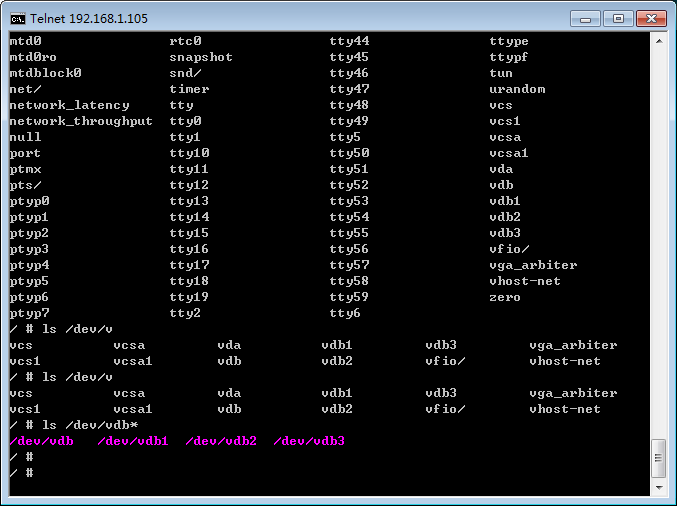
The partitions vdb1, vdb2, and vdb3 correspond to mmcblk0p1, mmcblk0p2, and mmcblk0p3 on the OK1046A-C3 development board respectively. We will mount the first partition for testing.
/# mount /dev/vdb2 /mnt
/# ls /mnt/boot
fsl-ok1046a-1040-5506-c3.dtb fsl-ok1046a-1133-5a59-c2.dtb Image ls1046ardb_boot.scr
View the status of qemu.
Start qemu.
root@localhost:~# qemu-system-aarch64 -smp 1 -m 512 -cpu host -machine type=virt \
-kernel /run/media/mmcblk0p2/boot/Image -enable-kvm -display none \
-serial tcp::4446,server,telnet \
-drive if=none,file=/qemu/qemu.ext4.img,id=foo,format=raw -device virtio-blk-device,drive=foo \
-append 'root=/dev/vda rw console=ttyAMA0 rootwait earlyprintk' -monitor stdio

Log in to the board using telnet.
telnet 192.168.1.105 4446 (Please refer to the actual IP address used for the development board to access the internet)
Use the command info roms at the putty terminal to view the disk.
(qemu)info roms

View the register.
(qemu)info registers
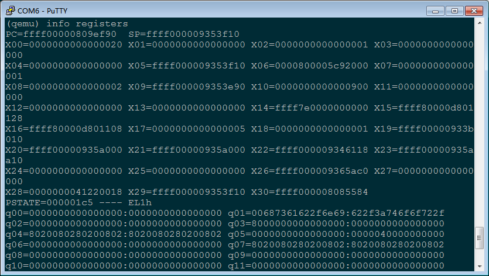
3.2.6 OP-TEE Basic Environmental Test
The basic idea behind TEE is to extract security services to run in an independent security environment. When the main system has security-related operations, it can obtain predefined services by launching requests to the security environment. Based on this, the OP-TEE can be divided into three parts: the TEE client and the TEE driver used to communicate with the security environment (these two parts are running in the main system Linux), as well as the TEE OS running in the security environment and the security application on it. See the following figure for details.
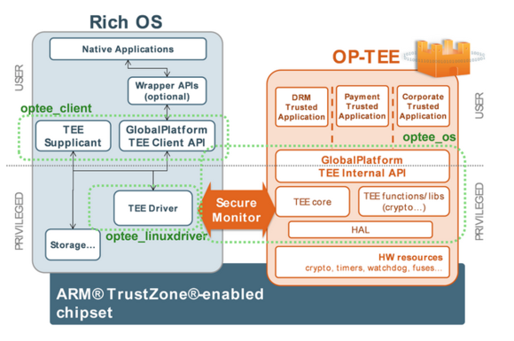
The OP-TEE OS for the OK1046A-C2 platform is integrated in the ppa.itb firmware, and the following printout can be seen by booting the linux kernel:
optee: probing for conduit method from DT.
optee: initialized driver
The file system of the OK1046A-C2 platform integrates the optee test program by default, which allows you to perform a comprehensive test of optee os as follows:
root@localhost:~# tee-supplicant &
root@localhost:~# xtest -l 15
//Waiting for the test to complete will result in the following:
…
regression_9523 OK
regression_9524 OK
+-----------------------------------------------------
47123 subtests of which 0 failed
79 test cases of which 0 failed
0 test case was skipped
TEE test application done!
Location of test program source code:
Test source code |
Source code path |
|---|---|
Linux applications |
flexbuild/packages/apps/optee_test/host |
TA program for OPTEE OS |
flexbuild/packages/apps/optee_test/ta |
When customers need to add their own CA TA program, they only need to place the written CA TA program in the above two directories and modify the corresponding Makefile file. Forlinx provides a simple example of the mytest test program.
Source code location of mytest test program:
Test source code |
Source code path |
|---|---|
Linux applications |
flexbuild/packages/apps/optee_test/host/mytest |
TA program for OPTEE OS |
flexbuild/packages/apps/optee_test/ta/mytest |
The mytest program supports sha1 sha256 two kinds of secure hash algorithms. Linux application will pass “www.forlinx.com” to the TA program in OPTEE OS for encryption calculation to return the result to linux application.
root@localhost:~# tee-supplicant &
root@localhost:~# mytest sha1
Entry sha1 CA
InitializeContext success
DEBUG: USER-TA:TA_CreateEntryPoint:43: has been called
FLOW: USER-TA: tee_user_mem_alloc:343: Allocate: link:[0x40018c70], buf:[0x40018c90:32]
DEBUG: USER-TA:TA_OpenSessionEntryPoint:81: Hello World!
OpenSession succDEBUG: USER-TA:g_CryptoTaHandle_Sha:107: 1557
ess
DEBUG: USER-TA:l_CryptoTaHash_sha:43: The md is sha1
FLOW: USER-TA: tee_user_mem_alloc:343: Allocate: link:[0x40018bd0], buf:[0x40018bf0:96]
FLOW: USER-TA: tee_user_mem_free:442: Free: link:[0x40018bd0], buf:[0x40018bf0:96]
InvokeCommand suDEBUG: USER-TA:TA_CloseSessionEntryPoint:94: Goodbye!
ccess
The respoFLOW: USER-TA: tee_user_mem_free:442: Free: link:[0x40018c70], buf:[0x40018c90:32]
nd data length iDEBUG: USER-TA:TA_DestroyEntryPoint:53: has been called
s 0x14
The Respond hash data from TA just like follow:
0x05, 0x1d, 0xff, 0x36, 0xdd, 0xaa, 0xf0, 0xed, 0x99, 0xe4, 0x8e, 0xce, 0x5e, 0x98, 0xdf, 0x5d,
0xa7, 0x55, 0xd2, 0xe2,

root@localhost:~# mytest sha256
Entry sha256 CA
InitializeContext success
DEBUG: USER-TA:TA_CreateEntryPoint:43: has been called
FLOW: USER-TA: tee_user_mem_alloc:343: Allocate: link:[0x40018c70], buf:[0x40018c90:32]
DEBUG: USER-TA:TA_OpenSessionEntryPoint:81: Hello World!
OpenSession succDEBUG: USER-TA:g_CryptoTaHandle_Sha:107: 1557
ess
DEBUG: USER-TA:l_CryptoTaHash_sha:47: The md is sha256
FLOW: USER-TA: tee_user_mem_alloc:343: Allocate: link:[0x40018bd0], buf:[0x40018bf0:96]
FLOW: USER-TA: tee_user_mem_free:442: Free: link:[0x40018bd0], buf:[0x40018bf0:96]
InvokeCommand suDEBUG: USER-TA:TA_CloseSessionEntryPoint:94: Goodbye!
ccess
The respoFLOW: USER-TA: tee_user_mem_free:442: Free: link:[0x40018c70], buf:[0x40018c90:32]
nd data length iDEBUG: USER-TA:TA_DestroyEntryPoint:53: has been called
s 0x20
The Respond hash data from TA just like follow:
0x76, 0xb4, 0xdb, 0x61, 0xb5, 0x5e, 0xf8, 0x1b, 0x79, 0xdd, 0x72, 0xd2, 0x4e, 0x19, 0x15, 0x4d,
0x55, 0x86, 0xeb, 0xfb, 0xe1, 0xa1, 0x46, 0xa8, 0xfd, 0x8c, 0xda, 0x46, 0x7b, 0x7f, 0x02, 0xc0,

3.2.7 OpenSSL Basic Environment Test
The Secure Socket Layer (ssl) protocol is the most widely used application protocol for protecting data in transit by encrypting it using cryptographic algorithms such as aes, des, and 3des.
Set environment variables before using OpenSSL
root@localhost:~# export OPENSSL_CONF=/usr/local/openssl/openssl.cnf
Test symmetric encryption rsa speed
root@localhost:~# openssl speed rsa1024
Doing 1024 bit private rsa's for 10s: 5129 1024 bit private RSA's in 9.98s
Doing 1024 bit public rsa's for 10s: 114201 1024 bit public RSA's in 9.98s
OpenSSL 1.0.2l 25 May 2017
built on: reproducible build, date unspecified
options:bn(64,64) rc4(ptr,char) des(idx,cisc,16,int) aes(partial) idea(int) blowfish(ptr)
compiler: aarch64-linux-gnu-gcc -I. -I.. -I../include -fPIC -DOPENSSL_PIC -DOPENSSL_THREADS -D_REENTRANT -DDSO_DLFCN -DHAVE_DLFCN_H -DHAVE_CRYPTODEV -I/home/zyh/workspace/TEST/10xx_C_new/1046/OK10xx-linux-fs/flexbuild/build/apps/components_arm64/usr/local/include -O3 -Wall -DSHA1_ASM -DSHA256_ASM -DSHA512_ASM
sign verify sign/s verify/s
rsa 1024 bits 0.001946s 0.000087s 513.9 11443.0
Test the AES symmetric encryption algorithm:
root@localhost:~# dd if=/dev/urandom of=test bs=1 count=5922
root@localhost:~# openssl enc -aes-128-cbc -e -in test -out test.enc -pass pass:123
root@localhost:~# openssl enc -aes-128-cbc -d -in test.enc -out test.dec -pass pass:123
root@localhost:~# diff test test.dec
Test the DES symmetric encryption algorithm:
root@localhost:~# dd if=/dev/urandom of=test bs=1 count=5922
root@localhost:~# openssl enc -des-ede3-cbc -e -in test -out test.enc -pass pass:123
root@localhost:~# openssl enc -des-ede3-cbc -d -in test.enc -out test.dec -pass pass:123
root@localhost:~# diff test test.dec
3.2.8 IPSEC Basic Environment Test
The setting of this function is relatively complex, and it is recommended to be carried out on the basis of a certain network. You need to enable the kernel netfilter match ipsec function, otherwise iptables cannot be set up properly; if the prompt raw table fails, the raw table can not be imported, or the kernel configuration adds raw table.
Gateway moon is OK1046A-C2 fm1-mac3 fm1-mac4 network port. Other clients are standard PC.
Network topology:

Subnet 192.168.0.0/24 uses ipsec encrypted communication, and subnet 192.168.1.0/24 uses plaintext communication.
Reconfigure the kernel
[*] Networking support —>
Networking options —>
[*] Network packet filtering framework (Netfilter) —>
Core Netfilter Configuration —>
<*> IPsec “policy” match support
[*] Networking support —>
Networking options —>
[*] Network packet filtering framework (Netfilter) —>
IP: Netfilter Configuration —>
<*> raw table support (required for NOTRACK/TRACE)
Install Strongswan
root@localhost:~# apt-get install strongswan //apt-get installs Strongswan
All hosts and gateways using ipsec need to be installed, and sudo is required for non-root permissions.
Gateway moon settings
/etc/ipsec.conf
/etc/ipsec.secrets
/etc/strongswan.conf
/etc/ipsec.d/
The ipsec. d directory holds the CA certificate, private key, and public key.

Path: OK10XX-C（Linux）user’s profile\tools\ipsec
The moon-related files refer to the moon_server.tar.bz2
Import iptables
root@localhost:~# iptables-restore < moon_iptables_1046.txt
root@localhost:~# ifconfig fm1-mac3 192.168.0.1
root@localhost:~# ifconfig fm1-mac4 192.168.1.250
Roadwarrior carol settings
/etc/ipsec.conf
/etc/ipsec.secrets
/etc/strongswan.conf
/etc/ipsec.d/
The ipsec. d directory holds the CA certificate, private key, and public key.

Path: OK10XX-C（Linux）user’s profile\tools\ipsec
Related files in carol_client.tar.bz2
Import iptables
root@localhost:~# sudo iptables-restore < carol_iptables.txt
root@localhost:~# sudo ifconfig eth0 192.168.0.100
Client alice settings
alice is located in the 192.168.1.0/24 network segment, you need to set the 192.168.0.0/24 gateway address
root@localhost:~# sudo ifconfig eth0 192.168.1.107
root@localhost:~# sudo route add -net 192.168.0.0/24 dev eth0
root@localhost:~# sudo route add -net 192.168.0.0 gw 192.168.0.1 netmask 255.255.255.0
Start ipsec
a. Execute on the moon gateway
root@localhost:~# ipsec restart
b. Execute on the carol gateway
root@localhost:~# ipsec restart
root@localhost:~# ipsec up home
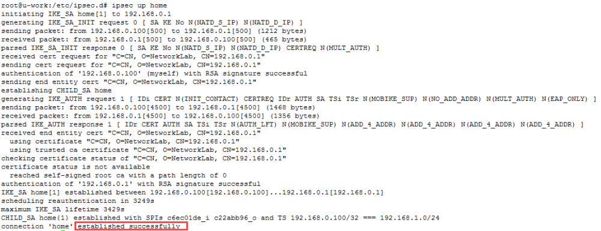
A connection “home” established successfully indicates that ipsec authentication is complete.
Ping communication between carol and alice
At present, carol and alice, which are located in different network segments, have communication functions, and encrypted communication is used in the subnet where carol is located.
A ping from the carol host to the alice host.
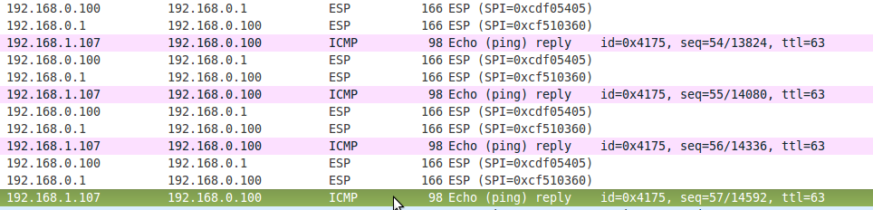
Passed between gateways 192.168.0.1 and 192.168.0.100 is the ESP ciphertext, which is parsed to produce the plaintext of 192.168.1.107’s reply to 192.168.0.100.
3.2.9 DPDK Basic Environment Test
DPDK is a framework for user-space packet processing, focusing on high-performance processing of packets in network applications. This is reflected in the fact that DPDK applications run on user space and utilize their own provided data plane libraries to send and receive packets, bypassing the Linux kernel stack’s processing of packets. The OK1046A-C2 platform supports a full DPDK environment, as well as OVS-DPDK, the underlying DPDK-based Open VSwitch.
DPDK’s knowledge base:
http://doc.dpdk.org/guides-17.05/linux_gsg/index.html
The following is an example of testing the DPDK environment of the OK1046A-C2 platform with Layer two forwarding and Layer three forwarding. First, to use the DPDK environment, you need to modify the device tree to configure the network to the user state. The device tree file to be used:
A network configuration is: 1133 5a59 for example
Source code path：OK10xx-linux-fs/flexbuild/build/linux/linux/arm64/fsl-ok1046a-usdpaa-1133-5a59-c2.dtb
Copy fsl-ok1046a-usdpaa-1133-5a59-c2.dtb to the root directory of the development board, and use the following commands to replace the device tree and delete the existing FMC configuration table:
root@localhost:~# mv /run/media/mmcblk0p2/boot/fsl-ok1046a-1133-5a59-c2.dtb /run/media/mmcblk0p2/boot/fsl-ok1046a-1133-5a59-c2.dtb.bak
root@localhost:~# cp /run/media/sda1/fsl-ok1046a-usdpaa-1133-5a59-c2.dtb /run/media/mmcblk0p2/boot/fsl-ok1046a-1133-5a59-c2.dtb
root@localhost:~# mv /etc/fmc/config/private/ls1046ardb/FORLINX/config_1133.xml /etc/fmc/config/private/ls1046ardb/FORLINX/config_1133.xml.bak
root@localhost:~# reboot
Start the development board after successful replacement input:
root@localhost:~# ifconfig fm1-mac3
If you get a message saying the Device is not found, the replacement has been successful.
Method to restore the default configuration after testing DPDK:
root@localhost:~# cp /run/media/mmcblk0p2/boot/fsl-ok1046a-1133-5a59-c2.dtb.bak \
/run/media/mmcblk0p2/boot/fsl-ok1046a-1133-5a59-c2.dtb
root@localhost:~# cp /etc/fmc/config/private/ls1046ardb/FORLINX/config_1133.xml.bak \
/etc/fmc/config/private/ls1046ardb/FORLINX/config_1133.xml
root@localhost:~# reboot
3.2.9.1 Layer Two Forwarding Test
The Layer two forwarding network topology is shown in the following figure:
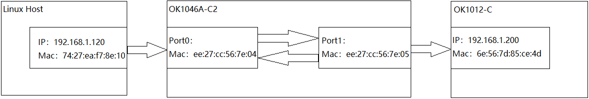
Use OK1046A-C2 platform fm1-mac2 and fm1-mac3 to forward data between Linux Host and OK1012A-C. Linux Host and OK1012A-C. (Note: OK 1046A-C3 development board is used for Linux Host here)
1133 5a59 configuration:
fm1-mac2==port0 fm1-mac5==port3 fm1-mac10==port6
fm1-mac3==port1 fm1-mac6==port4
fm1-mac4==port2 fm1-mac9==port5
Take 1133 5a59 configuration as an example: configure OK 1046A-C2:
root@localhost:~# echo 256 > /proc/sys/vm/nr_hugepages
root@localhost:~# mkdir /boot/hugetlbfs
root@localhost:~# mount -t hugetlbfs none /boot/hugetlbfs/
root@localhost:~# l2fwd -c 0xf -n 1 -- -p 0x3 -q 1 --no-mac-updating
EAL: Detected 4 lcore(s)
EAL: DPAA Bus Detected
EAL: Probing VFIO support...
EAL: VFIO support initialized
PMD: net: dpaa: fm1-mac2: ee:27:cc:56:7e:04
PMD: net: dpaa: fm1-mac3: ee:27:cc:56:7e:05
PMD: net: dpaa: fm1-mac4: ee:27:cc:56:7e:06
PMD: net: dpaa: fm1-mac5: ee:27:cc:56:7e:07
PMD: net: dpaa: fm1-mac6: ee:27:cc:56:7e:08
PMD: net: dpaa: fm1-mac9: ee:27:cc:56:7e:09
PMD: net: dpaa: fm1-mac10: ee:27:cc:56:7e:0a
PMD: dpaa_sec-7 cryptodev init
PMD: dpaa_sec-8 cryptodev init
PMD: dpaa_sec-9 cryptodev init
PMD: dpaa_sec-10 cryptodev init
MAC updating disabled
Lcore 0: RX port 0
Lcore 1: RX port 1
Initializing port 0... done:
Port 0, MAC address: EE:27:CC:56:7E:04
Initializing port 1... done:
Port 1, MAC address: EE:27:CC:56:7E:05
Skipping disabled port 2
Skipping disabled port 3
Skipping disabled port 4
Skipping disabled port 5
Skipping disabled port 6
Checking link statusdone
Port0 Link Up. Speed 1000 Mbps - full-duplex
Port1 Link Up. Speed 1000 Mbps - full-duplex
L2FWD: entering main loop on lcore 1
L2FWD: -- lcoreid=1 portid=1
L2FWD: lcore 2 has nothing to do
L2FWD: entering main loop on lcore 0
L2FWD: -- lcoreid=0 portid=0
Port statistics ====================================
Statistics for port 0 ------------------------------
Packets sent: 0
Packets received: 0
Packets dropped: 0
Statistics for port 1 ------------------------------
Packets sent: 0
Packets received: 0
Packets dropped: 0
Aggregate statistics ===============================
Total packets sent: 0
Total packets received: 0
Total packets dropped: 0
====================================================
Parameter |
Description |
|---|---|
-c |
Core mask 0xf uses 4 cores |
-n |
Number of memory channel |
-p |
Port mask 0xc binary 0011 using port0 port1 |
-q |
The number of queues per core defaults to 1 |
–no-mac-updating |
Do not replace MAC after conversion |
Configure OK1012A-C:
root@localhost:~# ifconfig eth0 192.168.1.200
root@localhost:~# tcpdump -i eth0 -vv -n -e
Configure Linux Host: (replace the kernel with the pktgen option turned on before configuring)
forlinx@ubuntu~$ ifconfig eth0 192.168.1.120
forlinx@ubuntu~$ echo "add_device fm1-mac3" > /proc/net/pktgen/kpktgend_0
forlinx@ubuntu~$ echo "dst_mac 6e:56:7d:85:ce:4d" > /proc/net/pktgen/fm1-mac3
forlinx@ubuntu~$ echo "dst 192.168.1.200" > /proc/net/pktgen/fm1-mac3
forlinx@ubuntu~$ echo "pkt_size 64" > /proc/net/pktgen/fm1-mac3
forlinx@ubuntu~$ echo "count 100000" > /proc/net/pktgen/fm1-mac3
forlinx@ubuntu~$ echo "start" > /proc/net/pktgen/pgctrl
View OK1046A-C2:

View OK1012A-C:

3.2.9.2 Layer Three Forwarding Test
The Layer three forwarding network topology is shown in the following figure:
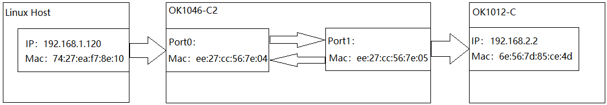
Use OK1046A-C2 to forward data between 192.168.1.0 network segment and 192.168.2.0 network segment. (Note: OK 1046A-C3 development board is used for Linux Host here)
1133 5a59 configuration:
fm1-mac2==port0 fm1-mac5==port3 fm1-mac10==port6
fm1-mac3==port1 fm1-mac6==port4
fm1-mac4==port2 fm1-mac9==port5
Take 1133 5a59 configuration as an example: configure OK1046A-C2:
The l3fwd lpm routing table that comes with the DPDK is not consistent with our network topology environment, so the code needs to be modified.
Source code path：OK10xx-linux-fs/flexbuild /packages/apps/dpdk/examples/l3fwd/l3fwd_lpm.c
Modification:

Packets with a destination address of 192.168.1.0/24 use port0 output.
Packets with a destination address of 192.168.2.0/24 use port1 output.
Use the flex-builder -C dpdk -a arm64 -m ls1046ardb command in the flex-build environment.
root@ubuntu:~/work/OK10xx-linux-fs/flexbuild# flex-builder -c dpdk -a arm64 -m ls1046ardb
Copy the compiled executable program packages/apps/dpdk/examples/l3fwd/build/l3fwd to the root directory of the development board.
root@localhost:~# echo 256 > /proc/sys/vm/nr_hugepages
root@localhost:~# mkdir /boot/hugetlbfs
root@localhost:~# mount -t hugetlbfs none /boot/hugetlbfs/
root@localhost:~# ./l3fwd -c 0x3 -n 1 -- -p 0x3 -P -L --config="(0,0,0),(1,0,1)" --eth-dest=0,74:27:ea:f7:8e:10 --eth-dest=1,6e:56:7d:85:ce:4d
EAL: Detected 4 lcore(s)
EAL: DPAA Bus Detected
EAL: Probing VFIO support...
EAL: VFIO support initialized
PMD: net: dpaa: fm1-mac2: ee:27:cc:56:7e:04
PMD: net: dpaa: fm1-mac3: ee:27:cc:56:7e:05
PMD: net: dpaa: fm1-mac4: ee:27:cc:56:7e:06
PMD: net: dpaa: fm1-mac5: ee:27:cc:56:7e:07
PMD: net: dpaa: fm1-mac6: ee:27:cc:56:7e:08
PMD: net: dpaa: fm1-mac9: ee:27:cc:56:7e:09
PMD: net: dpaa: fm1-mac10: ee:27:cc:56:7e:0a
PMD: dpaa_sec-7 cryptodev init
PMD: dpaa_sec-8 cryptodev init
PMD: dpaa_sec-9 cryptodev init
PMD: dpaa_sec-10 cryptodev init
L3FWD: Promiscuous mode selected
L3FWD: Longest-prefix match selected
Initializing port 0 ... Creating queues: nb_rxq=1 nb_txq=2... Address:EE:27:CC:56:7E:04, Destination:74:27:EA:F7:8E:10, Allocated mbuf pool on socket 0
LPM: Adding route 0xc0a80100 / 24 (0)
LPM: Adding route 0xc0a80200 / 24 (1)
LPM: Adding route IPV6 / 48 (0)
LPM: Adding route IPV6 / 48 (1)
txq=0,0,0 txq=1,1,0
Initializing port 1 ... Creating queues: nb_rxq=1 nb_txq=2... Address:EE:27:CC:56:7E:05, Destination:6E:56:7D:85:CE:4D, txq=0,0,0 txq=1,1,0
Skipping disabled port 2
Skipping disabled port 3
Skipping disabled port 4
Skipping disabled port 5
Skipping disabled port 6
Initializing rx queues on lcore 0 ... rxq=0,0,0
Initializing rx queues on lcore 1 ... rxq=1,0,0
Checking link statusdone
Port0 Link Up. Speed 1000 Mbps -full-duplex
Port1 Link Up. Speed 1000 Mbps -full-duplex
L3FWD: entering main loop on lcore 1
L3FWD: -- lcoreid=1 portid=1 rxqueueid=0
L3FWD: entering main loop on lcore 0
L3FWD: -- lcoreid=0 portid=0 rxqueueid=0
Parameter |
Description |
|---|---|
-c |
Core Mask |
-n |
Number of memory channel |
-p |
Port Mask |
-P |
promiscuous mode |
-L |
Use LPM |
–config |
(Port, Queue, Core) bind port queue cpu core |
–eth-dest |
Destination MAC address corresponding to the output port |
Configure OK1012A-C：
root@localhost:~# ifconfig eth0 192.168.2.2
root@localhost:~# tcpdump -i eth0 -vv -n -e
Configure Linux Host: (replace the kernel with the pktgen option turned on before configuring).
forlinx@ubuntu~$ ifconfig eth0 192.168.1.120
forlinx@ubuntu~$ echo "add_device fm1-mac3" > /proc/net/pktgen/kpktgend_0
forlinx@ubuntu~$ echo "dst_mac ee:27:cc:56:7e:04" > /proc/net/pktgen/fm1-mac3
forlinx@ubuntu~$ echo "dst 192.168.2.2" > /proc/net/pktgen/fm1-mac3
forlinx@ubuntu~$ echo "pkt_size 64" > /proc/net/pktgen/fm1-mac3
forlinx@ubuntu~$ echo "count 100000" > /proc/net/pktgen/fm1-mac3
forlinx@ubuntu~$ echo "start" > /proc/net/pktgen/pgctrl
View OK1012A-C:
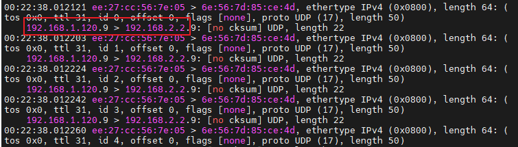
3.2.10 OVS-DPDK Basic Environmental Test
This section briefly introduces the use of ovs-dpdk to build a layer two switching environment as shown in the following figure.
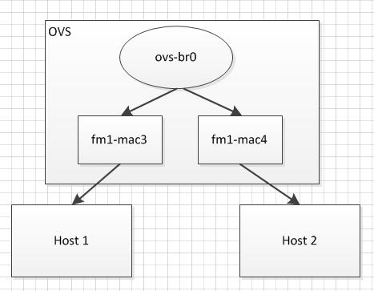
Note: Refer to Section 3.2.9 Using the Device Tree fsl-ok1046a-usdpaa-1133-5a59-c2.dtb.
root@localhost:~#echo 256 > /proc/sys/vm/nr_hugepages
root@localhost:~#mkdir -p /mnt/hugepages
root@localhost:~#mount -t hugetlbfs none /mnt/hugepages
root@localhost:~#export DPAA_FMC_MODE=1
root@localhost:~#fmc -c /usr/local/dpdk/dpaa/usdpaa_config_ls1046_1133.xml -p \
/usr/local/dpdk/dpaa/usdpaa_policy_hash_ipv4_1queue.xml -a
root@localhost:~#export DPAA_NUM_RX_QUEUES=1
root@localhost:~#pkill -9 ovs
root@localhost:~#export DPDK_EXCLUDE_DEFAULT_MBUF=1
root@localhost:~#export PATH=$PATH:/usr/local/bin
root@localhost:~#export PATH=$PATH:/usr/local/sbin
root@localhost:~#rm -rf /usr/local/etc/openvswitch/conf.db
root@localhost:~#rm -rf /usr/local/var/run/openvswitch/vhost-user1
root@localhost:~#rm -rf /usr/local/var/run/openvswitch/vhost-user2
root@localhost:~#rm -f /tmp/conf.db
root@localhost:~#mkdir -p /var/log/openvswitch
root@localhost:~#mkdir -p /usr/local/etc/openvswitch
root@localhost:~#mkdir -p /usr/local/var/run/openvswitch
root@localhost:~#/usr/local/bin/ovsdb-tool create \
/usr/local/etc/openvswitch/conf.db /usr/local/share/openvswitch/vswitch.ovsschema
/usr/local/sbin/ovsdb-server --remote=punix:/usr/local/var/run/openvswitch/db.sock \
--remote=db:Open_vSwitch,Open_vSwitch,manager_options --pidfile --detach \
--log-file=/var/log/openvswitch/ovs-vswitchd.log
root@localhost:~#export DB_SOCK=/usr/local/var/run/openvswitch/db.sock
root@localhost:~#/usr/local/bin/ovs-vsctl --no-wait set Open_vSwitch . other_config:dpdk-init=true
root@localhost:~#export SOCK_MEM=200
root@localhost:~#/usr/local/bin/ovs-vsctl --no-wait set Open_vSwitch . \
other_config:dpdk-socket-mem="$SOCK_MEM"
root@localhost:~#export OVS_CORE_MASK=0x1
root@localhost:~#export OVS_SERVICE_MASK=0x1
root@localhost:~#ovs-vsctl --no-wait set Open_vSwitch . other_config:dpdk-lcore-mask=$OVS_SERVICE_MASK
root@localhost:~#ovs-vsctl --no-wait set Open_vSwitch . other_config:pmd-cpu-mask=$OVS_CORE_MASK
root@localhost:~#ovs-vswitchd unix:$DB_SOCK --pidfile --detach -c $OVS_CORE_MASK
root@localhost:~#ovs-vsctl add-br br0 -- set bridge br0 datapath_type=netdev
root@localhost:~#ovs-vsctl add-port br0 dpdk0 -- set Interface dpdk0 type=dpdk \
options:dpdk-devargs=fm1-mac3 \
options:n_rxq_desc=256 options:n_txq_desc=256
ovs-vsctl add-port br0 dpdk1 -- set Interface dpdk1 type=dpdk \
options:dpdk-devargs=fm1-mac4 \
options:n_rxq_desc=256 options:n_txq_desc=256
root@localhost:~#ovs-ofctl del-flows br0 ovs-ofctl add-flow br0 "table=0,priority=100,arp,action=normal"
root@localhost:~#ovs-ofctl add-flow br0 "table=0,priority=100,ip,ct_state=-trk,action=ct(table=1)"
root@localhost:~#ovs-ofctl add-flow br0 "table=1,in_port=1,ip,ct_state=+trk+new,action=ct(commit),2"
root@localhost:~#ovs-ofctl add-flow br0 "table=1,in_port=1,ip,ct_state=+trk+est,action=2"
root@localhost:~#ovs-ofctl add-flow br0 "table=1,in_port=2,ip,ct_state=+trk+new,action=ct(commit),1"
root@localhost:~#ovs-ofctl add-flow br0 "table=1,in_port=2,ip,ct_state=+trk+est,action=1"
root@localhost:~#ovs-vsctl --no-wait set Open_vSwitch . other_config:emc-insert-inv-prob=1
Connect Host1, OK1046A-C3, and Host2 using a network cable and test the forwarding performance using the following commands:
Host1:
root@localhost:~#iperf3 -s
Host2：
root@localhost:~#iperf3 -c 192.168.1.120 -i 1 -t 60

4. System Flashing
The OK1046A _ C3 development board currently supports the USB flash disk system. When flashing the system, there are two scenarios: The first scenario is when the system can boot normally. In this case, you can directly use a USB flash drive to burn the image. The second scenario is when the system becomes unbootable (bricked), and the user needs to create a burnable TF (TransFlash) card to boot uboot. The TF card should be used in conjunction with a USB flash drive for burning the image.
4.1 USB Flashing
Note:
There are two versions of the SoM for OK1046A-C2: V1.X and V2.X. Users can identify the SoM version by checking the silk screen on the board and then selecting the appropriate factory image;
USB drive format: The USB drive should be formatted as FAT32. If the size of the USB drive is greater than 4GB, it is recommended to format it before copying the image;
Factory image file path for V1.x: /User/Data/Linux/V1.x SoM/Images/1046_V1_C3_Ubuntu_images;
Factory image file path for V2.x: /User/Data/Linux/V2.x SoM/Images/1046_V2_C3_Ubunutu_images.
OK1046A-C2 platform can use a USB drive to write the file system to the eMMC, or update the Firmware in the QSPI flash. Provided that Uboot can start up normally, you will need a FAT32-formatted USB drive to update the system using a USB drive for flashing the image. Please use a genuine and ordinary USB drive with the first partition formatted as FAT32 and a capacity greater than 4 GB. Please format the USB drive before copying the image.
Copy the factory image to the prepared USB flash disk. The description of the USB flash disk image file is as follows:
Image Name |
Description |
|---|---|
ls1046ardb_update.scr |
Scripts |
usb_update.itb |
Tools |
ubuntu.img |
Rootfs |
firmware_ls1046ardb_uboot_qspiboot_1133_5a59.img |
Firmware |
config.ini |
Config |
boot |
Kernel and device tree, etc. |
The following files are stored in the USB flash disk FAT32 partition:
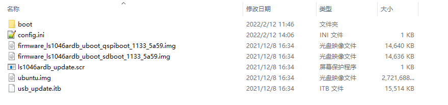
Either rootfs or firmware can be placed, or both can be placed. The config. Ini of the configuration file is as follows:
[config]
platform=ok1046-c
qspifirmware=firmware_ls1046ardb_uboot_qspiboot_1133_5a59.img
sdfirmware=firmware_ls1046ardb_uboot_sdboot_1133_5a59.img
rootfs=ubuntu.img
qspiflash=false
emmcflash=true
Note: Only the Uboot, kernel and file system in the EMMC are updated when the default configuration is flashed. If you need to update the Uboot image in the QSPI Flash at the same time (the QSPI Flash only stores the Uboot), Please change the “qspiflash” field in the config. Ini file to “true”.
Insert the prepared USB disk into the USB port of the development board, as shown below:
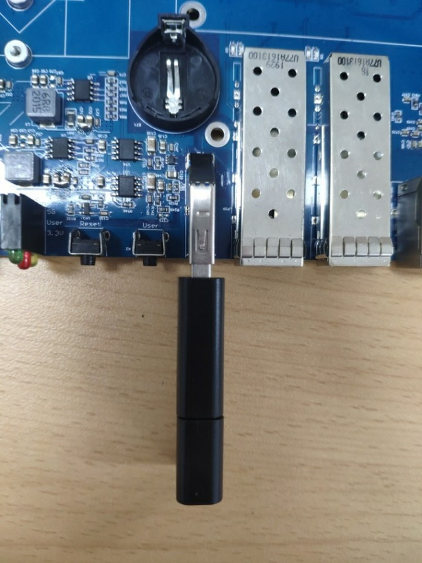
Power on and start the system to automatically enter the programming process, and some of the programming and printing information is as follows:
==================================================================
+---------------+------------------------------------------------+
|platform |ok1046-c
|rootfs |ubuntu.img
|qspiflash |false
|emmcflash |true
|sdfirmware |firmware_ls1046ardb_uboot_sdboot_1133_5a59.img
|qspifirmware |firmware_ls1046ardb_uboot_qspiboot_1133_5a59.img
+---------------+------------------------------------------------+
==================================================================
[emmc partition]
==================================================================
2048+0 records in
2048+0 records out
1048576 bytes (1.0MB) copied, 0.052539 seconds, 19.0MB/s
parting, wait ...
[ 6.936641] random: parted: uninitialized urandom read (16 bytes read)
part, done.
formating, wait ...
format, done.
==================================================================
[emmc flash]
==================================================================
flashing, wait...
29270+1 records in
29270+1 records out
14986242 bytes (14.3MB) copied, 0.786920 seconds, 18.2MB/s
[ 7.905621] random: crng init done
flash, done.
[ 85.754609] EXT4-fs (mmcblk0p3): mounted filesystem with ordered data mode. Opts: (null)
[Done] 79s
==================================================================
The printing information as shown above indicates that the system is successfully burned. Power off, unplug the U disk, and power on again.
4.2 Creating a Flash-in TF Card
Note:
TF card format is FAT32 format;
Before using the TF card to guide the burning, you need to set the dip switch A to ON - TF startup;
Due to the corruption of the Ubboot image in the QSPI flash, it is necessary to rewrite the QSPI flash. You need to modify the “qspiflash” field in the “config.ini” file on the USB drive to “true”.
The OK1046A-C2 Uboot is set to boot the system from the QSPI flash by default. However, when the QSPI flash fails to boot up the system properly, you will need to create a bootable TF card to initiate the system boot process. This can be done in conjunction with using a USB drive to write the system files onto the TF card.
The OK1046A-C2 platform has a TF card interface, but it conflicts with the eMMC and cannot be used under normal circumstances. However, it can still be used to initiate the system boot process. After starting up the system with the TF card, you can remove it and the system will automatically switch to the eMMC. Of course, the premise is that we need to burn the firmware into the TF card. The following is the process of making the burned TF card.
1. Insert the TF card into the host through the USB card reader and connect it to the virtual machine Ubuntu. (If the card reader is not recognized by the virtual machine, you can use the following method to recognize the card reader to the virtual machine.);
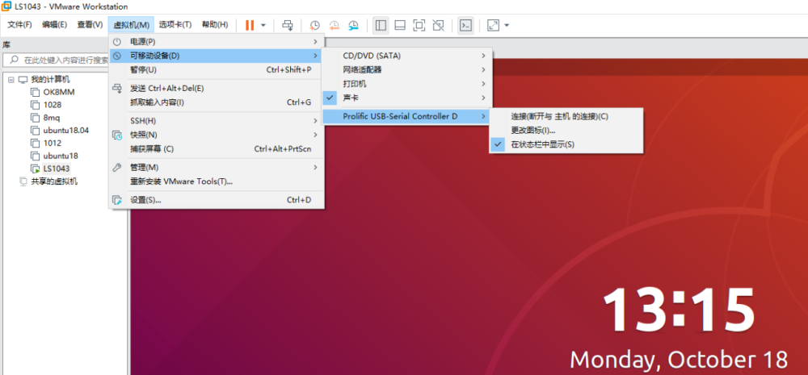
2. View device nodes;
forlinx@ubuntu:~$ ls /dev/sdb*
/dev/sdb /dev/sdb1
3. Flash firmware to TF card;
The OK1046A-C2 has two versions of the SoM, namely V1.X and V2.X. Users can determine the version of the SoM by checking the silk screen markings on the board. When creating the card, it is necessary to use the corresponding card creation image. The path to the card creation image is as follows:
V1.x version of the SoM image path: user information / manual / 1046 user’s manual chapter 6.2 Making TF Flashing Card Image / V1.x version/ firmware_ls1046ardb_uboot_sdboot_1040_5506.img;
V2.x version of the SoM image path: user information / manual / 1046 user’s manual chapter 6.2 Making TF Flashing Card Image / V2.x version/ firmware_ls1046ardb_uboot_64bit_sdboot_1040_5506.img.
Taking the burning of a TF card for the V1.x version SoM as an example, we can copy the card creation image to the “work” directory in Ubuntu, and then follow these steps to write the image to the TF card:
forlinx@ubuntu:~/work/$ sudo dd \
if=firmware_ls1046ardb_uboot_sdboot_1040_5506.img of=/dev/sdb seek=8 bs=512
29270+1 records in
29270+1 records out
14986242 bytes (15 MB, 14 MiB) copied, 11.3759 s, 1.3 MB/s
As shown above, the successful creation of the TF card indicates that the card is ready to be used as a system boot device. You can now use the TF card to boot the system and, if needed, use a USB flash drive for system installation.
Insert the prepared TF card into the TF card slot and connect the prepared USB flash drive to the USB interface on the development board. Set DIP switch A to the ON position (as shown below). Start the development board and continuously press the space bar from the moment of powering on until the system stops at the uboot command line. Remove the TF card at this time, and the system will automatically switch to eMMC. Then, type in “boot” to enter the burning process.
<font style="color:#000000;"> 
DIP switch status during TF card writing.
The printed information during the TF card flashing process is as follows:
Initialzing DDR using fixed setting
Configuring DDR for 2100 MT/s data rate
Trying to boot from MMC1
U-Boot 2018.03-dirty (May 26 2020 - 12:34:31 +0800)
SoC: LS1046AE Rev1.0 (0x87070010)
Clock Configuration:
CPU0(A72):1800 MHz CPU1(A72):1800 MHz CPU2(A72):1800 MHz
CPU3(A72):1800 MHz
Bus: 700 MHz DDR: 2100 MT/s FMAN: 800 MHz
Reset Configuration Word (RCW):
00000000: 0e150012 10000000 00000000 00000000
00000010: 10405506 40005012 40025000 c1000000
00000020: 00000000 00000000 00000000 00238996
00000030: 20044500 00001002 00000096 00000001
Model: OK1046-C
Board: LS1046ARDB, boot from SD/eMMC
SERDES Reference Clocks:
SD1_CLK1 = 100.00MHZ, SD1_CLK2 = 156.25MHZ
SD2_CLK1 = 100.00MHZ, SD2_CLK2 = 100.00MHZ
I2C: ready
DRAM: 1.9 GiB (DDR4, 32-bit, CL=15, ECC off)
SEC0: RNG instantiated
FSL_SDHC: 0
PPA Firmware: Version LSDK-18.06-Forlinx
SEC Firmware: 'loadables' present in config
loadables: 'trustedOS@1'
DS2460 OK
Using SERDES1 Protocol: 4160 (0x1040)
Using SERDES2 Protocol: 21766 (0x5506)
MMC: Loading Environment from MMC... *** Warning - bad CRC, using default environment
Failed (-5)
In: serial
Out: serial
Err: serial
SATA link 0 timeout.
AHCI 0001.0301 32 slots 1 ports 6 Gbps 0x1 impl SATA mode
flags: 64bit ncq pm clo only pmp fbss pio slum part ccc apst
Found 0 device(s).
SCSI: Net:
MMC read: dev # 0, block # 18432, count 128 ...
Fman1: Data at 00000000fbc4c020 is not a firmware
PCIe0: pcie@3400000 Root Complex: no link
PCIe1: pcie@3500000 Root Complex: no link
PCIe2: pcie@3600000 Root Complex: no link
No ethernet found.
Hit any key to stop autoboot: 0
=> boot // Enter the uboot command line, pop up the TF card, and enter the boot command to enter the programming process
starting USB...
[…] //Omit intermediate print information
+---------------+------------------------------------------------+
|platform |ok1046-c
|rootfs |ubuntu.img
|qspiflash |true
|emmcflash |true
|sdfirmware |firmware_ls1046ardb_uboot_sdboot_1133_5a59.img
|qspifirmware |firmware_ls1046ardb_uboot_qspiboot_1133_5a59.img
+---------------+------------------------------------------------+
==================================================================
[erase qspi]
==================================================================
Erasing 4 Kibyte @ 1000 - 0% complete.[ 7.117312] random: crng init done
Erasing 4 Kibyte @ 1000000 - 100% complete.
==================================================================
[flash qspi]
==================================================================
flashing, wait ...
29278+1 records in
29278+1 records out
14990338 bytes (14.3MB) copied, 197.133481 seconds, 74.3KB/s
real 3m 17.13s
user 0m 0.00s
sys 0m 0.15s
flash done.
==================================================================
[emmc partition]
==================================================================
2048+0 records in
2048+0 records out
1048576 bytes (1.0MB) copied, 0.052741 seconds, 19.0MB/s
parting, wait ...
part, done.
formating, wait ...
format, done.
==================================================================
[emmc flash]
==================================================================
flashing, wait...
29270+1 records in
29270+1 records out
14986242 bytes (14.3MB) copied, 0.787546 seconds, 18.1MB/s
flash, done.
[ 466.333036] EXT4-fs (mmcblk0p3): mounted filesystem with ordered data mode. Opts: (null)
[Done] 460s
==================================================================
As shown above, indicates that the system is successfully burned. The user burns with a TF card to guide the burning, and after the burning is completed, you need to dial the dip switch A to OFF, pull out the USB flash drive, and then re-power on the startup.
4.3 TFTP Flashing QSPI
4.3.1 TFTP Environment Setup
Tftp is a common network protocol used to download files remotely. It is implemented based on udp and is often used to download files from the Host to the development board in the process of embedded debugging and development, avoiding the tedious process of copying the U disk. This section mainly explains the environment construction of the tftp server on the Host side. The tftp server has been installed by default in Ubuntu 18.04 provided by Forlinx. You can skip this section.
Before installing, make sure your virtual machine has network access. First install tftp-hpa and tftpd-hpa (the former is the client and the latter is the server) and xinetd.
forlinx@ubuntu:~$ sudo apt-get install tftp-hpa tftpd-hpa xinetd // Install the required programs using apt
forlinx@ubuntu:~$ sudo service tftpd-hpa restart // Restart the tftp service as the system administrator
forlinx@ubuntu:~$ cat /etc/default/tftpd-hpa // Use the cat command to view the tftp configuration file
# /etc/default/tftpd-hpa
TFTP_USERNAME="tftp"
TFTP_DIRECTORY="/var/lib/tftpboot"
TFTP_ADDRESS=":69"
TFTP_OPTIONS="--secure"
The default tftp directory is/var/lib/tftpboot. The following is the local tftp test:
forlinx@ubuntu:~$ sudo chmod 777 -R /var/lib/tftpboot // Grant read, write, and execute permissions to the files
[sudo] password for forlinx: // You need to enter the password: forlinx, then press Enter
forlinx@ubuntu:~$ echo “www.forlinx.com” > /var/lib/tftpboot/test // Enter the field into the file
forlinx@ubuntu:~$ tftp localhost // Retrieve the file via tftp
tftp> get test
tftp> q
forlinx@ubuntu:~$ ls test // List the file “test” in the current directory
test
forlinx@ubuntu:~$ cat test // View the contents of the file “test”
www.forlinx.com
The content of the test is what was just written, which means that the local test was successful.
4.3.2 TFTP Flashing QSPI
The uboot phase of the OK1046A-C2 platform can use Ethernet, and the uboot supports the tftp protocol. Therefore, we only need to slightly configure the network of the development board, and then we can download the file from the Host to the memory of the development board through tftp, and then burn it into the qspi. The following demonstrates the network configuration and the burning process. Note that the user’s network environment is different. When configuring the network, the specific IP information shall be subject to the actual situation.
The virtual machine should be set to bridge mode, check the IP of the virtual machine (here take 172.16.0.77 as an example, the specific IP please according to the actual situation of the user):
forlinx@ubuntu:~$ ifconfig //Acquire network interface configuration information
ens33: flags=4163<UP,BROADCAST,RUNNING,MULTICAST> mtu 1500
inet 172.16.0.77 netmask 255.255.255.0 broadcast 172.16.0.255
inet6 fe80::e102:44b4:d3e9:6f prefixlen 64 scopeid 0x20<link>
ether 00:0c:29:0c:27:d4 txqueuelen 1000 (Ethernet)
RX packets 890249 bytes 1300419308 (1.3 GB)
RX errors 0 dropped 0 overruns 0 frame 0
TX packets 143750 bytes 9922163 (9.9 MB)
TX errors 0 dropped 0 overruns 0 carrier 0 collisions 0
lo: flags=73<UP,LOOPBACK,RUNNING> mtu 65536
inet 127.0.0.1 netmask 255.0.0.0
inet6 ::1 prefixlen 128 scopeid 0x10<host>
loop txqueuelen 1000 (Local Loopback)
RX packets 1554 bytes 126929 (126.9 KB)
RX errors 0 dropped 0 overruns 0 frame 0
TX packets 1554 bytes 126929 (126.9 KB)
TX errors 0 dropped 0 overruns 0 carrier 0 collisions 0
Copy the Firmware file to the TFTP directory (this path is the path where the full compilation generates the image):
forlinx@ubuntu:~$ cp /home/forlinx/work/OK10xx-linux-
fs/flexbuild/build/images/firmware_ls1046ardb_uboot_qspiboot_1133_5a59.img /var/lib/tftpboot/
//Copy the firmware to the/var/lib/tft/pboot directory
Insert the network cable into the network port on P13, power on the development board, and continuously hit the space bar to make the development board stay at the uboot command line.
[…] // Omit some printed information
PCIe0: pcie@3400000 is disabled.
PCIe1: pcie@3500000 Root Complex: no link.
PCIe2: pcie@3600000 Root Complex: x1 gen1.
FM1@DTSEC1, FM1@DTSEC2, FM1@DTSEC3 [PRIME], FM1@DTSEC4, FM1@DTSEC5, FM1@DTSEC6, FM1@TGEC1
Press any key to stop autoboot: 0
=> setenv ipaddr 172.16.0.79 // Set the IP address of the development board.
=> setenv serverip 172.16.0.77 // Configure the Server IP.
=> ping 172.16.0.77 // Conduct a ping test.
Using FM1@DTSEC3 device
host 172.16.0.77 is alive // "Host is alive" indicates that the network communication is normal.
=> tftp 0x90000000 firmware_ls1046ardb_uboot_qspiboot_1133_5a59.img
// "Host is alive" indicates that the network communication is normal. Download the file to the memory.
Using FM1@DTSEC3 device
TFTP from server 172.16.0.77; our IP address is 172.16.0.79
Filename 'firmware_ls1046ardb_uboot_qspiboot_1133_5a59.img'.
Load address: 0x90000000
Loading: #################################################################
#################################################################
#################################################################
#################################################################
#################################################################
#################################################################
#################################################################
#################################################################
#################################################################
#################################################################
#################################################################
#################################################################
#################################################################
#################################################################
#################################################################
###############################################
3.4 MiB/s
done
Bytes transferred = 14990338 (e4bc02 in hexadecimal)
=> sf probe 0:0 // Connect to the flash.
SF: Detected w25q128bv with a page size of 256 bytes, an erase size of 4 KiB, and a total capacity of 16 MiB.
=> sf erase 0 0x1000000 // Erase the erase blocks from offset 0x0 to 0x1000000.
SF: 16777216 bytes at 0x0 have been erased: OK.
=> sf write 0x90000000 0 0x1000000
// Write the data at memory address 0x90000000 to the flash at offset 0x0. The length of the written data is 0x1000000 (16MB).
device 0, whole chip
SF: 16777216 bytes at 0x0 have been written: OK.
=> reset // Restart the U-Boot.
resetting ...
U-Boot 2018.03 (Dec 08 2021 - 15:49:05 +0800)
SoC: LS1046AE Rev1.0 (0x87070010)
Clock Configuration:
CPU0(A72):1800 MHz CPU1(A72):1800 MHz CPU2(A72):1800 MHz
CPU3(A72):1800 MHz
Bus: 700 MHz DDR: 2100 MT/s FMAN: 800 MHz
Reset Configuration Word (RCW):
00000000: 0e150012 10000000 00000000 00000000
00000010: 11335a59 40005012 40025000 c1000000
00000020: 00000000 00000000 00000000 00238996
00000030: 20044500 00001002 00000096 00000001
Model: OK1046-C
Board: LS1046ARDB, boot from QSPI
SERDES Reference Clocks:
SD1_CLK1 = 100.00MHZ, SD1_CLK2 = 156.25MHZ
SD2_CLK1 = 100.00MHZ, SD2_CLK2 = 100.00MHZ
I2C: ready
DRAM: Initialzing DDR using fixed setting
Configuring DDR for 2100 MT/s data rate
1.9 GiB (DDR4, 32-bit, CL=15, ECC off)
SEC0: RNG instantiated
PPA Firmware: Version LSDK-18.06-Forlinx
SEC Firmware: 'loadables' present in config
loadables: 'trustedOS@1'
DS2460 OK
Using SERDES1 Protocol: 4403 (0x1133)
Using SERDES2 Protocol: 23129 (0x5a59)
MMC: FSL_SDHC: 0
Loading Environment from SPI Flash... SF: Detected w25q128bv with page size 256 Bytes, erase size
[…]
After the programming is completed, enter the reset command to restart uboot. As shown above, the programming is successful.
4.4 Single-step Kernel Update
OK1046A _ C3 kernel image is burned to the mmcblk0p2 partition of emmc. If the kernel image is updated separately, only the image with the same name needs to be updated. Take the replacement of the fsl-ok1046a-1133-5a59-c2.dtb device tree as an example. The specific operations are as follows:
root@localhost: cd /run/media/mmcblk0p2/ //Enter the partition path
root@localhost:/run/media/mmcblk0p2# ls
boot //This file stores the kernel image
root@localhost:/run/media/mmcblk0p2# cd boot/
root@localhost:/run/media/mmcblk0p2/boot# ls
fsl-ok1046a-1133-5a59-c2.dtb fsl-ok1046a-1040-5506-c3.dtb Image ls1046ardb_boot.scr
Copy the required replacement image to a USB drive, insert the USB drive into the USB interface of the development board, with the USB drive mounted at /run/media/sda1, and then copy the image from the USB drive to this partition.
root@localhost:/run/media/mmcblk1p1/boot# cp /run/media/sda1/fsl-ok1046a-1133-5a59-c2.dtb fsl-ok1046a-1133-5a59-c2.dtb
root@localhost:/run/media/mmcblk1p1/boot# sync //Save
root@localhost:/run/media/mmcblk1p1/boot# reboot //Restart